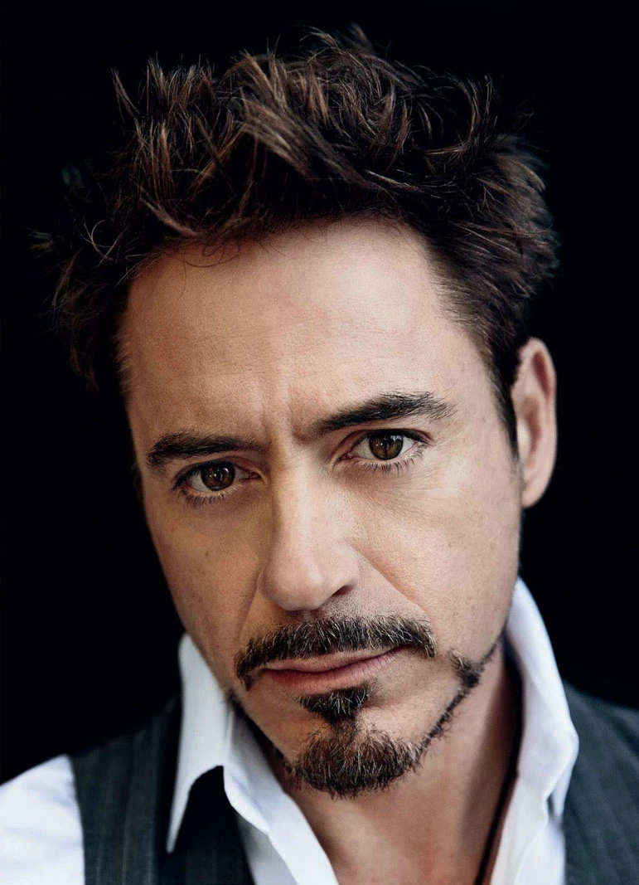
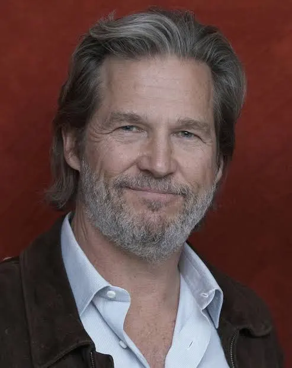

===== Page 1 =====
IRON MAN
by
Matt Holloway & Art Marcum and Mark Fergus & Hawk Ostby
Based on the Marvel Comic
Revisions by: Matt Holloway & Art Marcum Mark Fergus & Hawk Ostby John August
Current Revisions by: Mark Fergus and Hawk Ostby
SALMON #2: XX/XX/07BUFF #2: 05/09/07GOLDENROD #2: 05/02/07GREEN #2: 05/01/07YELLOW #2: 04/24/07PINK #2: 04/13/07BLUE #2: 04/12/07WHITE #2: 04/05/07TAN: 03/30/07CHERRY: 03/23/07SALMON: 03/21/07BUFF: 03/15/07GOLDENROD: 03/12/07GREEN: 03/09/07YELLOW: 03/08/07PINK: 02/28/07BLUE: 02/20/07WHITE: 01/24/07
MARVEL STUDIOS
ALL RIGHTS RESERVED. COPYRIGHT ©2007 MARVEL STUDIOS, INC. NO PORTION OF THIS SCRIPT MAY BE PERFORMED, PUBLISHED, REPRODUCED, SOLD OR DISTRIBUTED BY ANY MEANS, OR QUOTED OR PUBLISHED IN ANY MEDIUM, INCLUDING ANY WEB SITE, WITHOUT THE PRIOR WRITTEN CONSENT OF MARVEL STUDIOS, INC. DISPOSAL OF THIS SCRIPT COPY DOES NOT ALTER ANY OF THE RESTRICTIONS SET FORTH ABOVE.
===== Page 2 =====
1.
FADE IN:
EXT. RURAL AFGHANISTAN - DAY
FROM UP HIGH: a U.S. Military convoy worms through a barren vista. ROCK MUSIC swells as we drift down and enter the center Humvee.
2. INT. HUMMER - CONTINUOUS
Three Airmen, kids with battle- worn faces. Crammed in there with them is a Man in an expensive suit, who looks teleported from Beverly Hills.
He is, of course, genius inventor and billionaire, TONY STARK. In his hand is a drink tumbler of vodka.
TONY Oh, I get it. You guys aren't allowed to talk. Is that it? Are you not allowed to talk?
One Airman grins, fidgeting with his orange NY Mets watch.
JIMMY No. We're allowed to talk. TONY Oh. I see. So it's personal. RAMIREZ I think they're intimidated. TONY Good God, you're a woman.
The others try to compress laughs.
TONY (CONT'D) I, honestly, I couldn't have called that. (after silence) I would apologize, but isn't that what we're going for here? I saw you as a soldier first.
JIMMY I have a question, sir. TONY Please.
===== Page 3 =====
2 CONTINUED: 2
JIMMYIs it true you're twelve for twelve with last years Maxim cover girls?
TONYExcellent question. Yes and no. March and I had a schedule conflict but, thankfully, the Christmas cover was twins. Anyone else? You, with the hand up.
PRATTIt's a little embarrassing.
TONYJoin the club.
PRATTCan I take a picture with you?
TONYAre you aware that Native Americans believe photographs steal a little piece of your soul? (then)Not to worry, mine's long gone. Fire away.
Pratt, excited, poses as another Airman snaps the photo. A second later - -
A MASSIVE EXPLOSION rocks them. Through the windshield, the Humvee ahead of them erupts in a fireball.
Tony is flung aside, and in the side- mirror - -
The Humvee behind them EXPLODES. Pandemonium as - -
The Airmen are instantly in battle mode. They scramble out, shutting Tony inside.
PRATTSTAY HERE!
TONY'S POV - OF JIMMY: as he's stitched by a bouncing Betty mine. Now, running past, firing a .50 cal. machine gun is - -
USAF Lt. Colonel JAMES "RHODEY" RHODES. He looks in.
RHODEYGET DOWN, TONY. GET THE - -
===== Page 4 =====
3. CONTINUED: (2) 2
An EXPLOSION cuts him off. Rhodey fires through the chaos, covering all directions, then advances into the murk.
Another Hummer goes up in a fireball, and now - -
Tony's window blows in, spraying glass and shrapnel. He scrambles for the door.
EXT. TONY'S HUMVEE - SECONDS LATER
Smoke. Machine gun fire. Tracers zip past. SHOUTING.
Tony ducks, scampering along. He spots an M- 16, picks it up, but the weapon is burning hot. He drops it, moves on when- -
Something PINGS off a smoldering Humvee and thuds in the dirt near him. He spins and we - -
SNAP ZOOM TO: an RPG, revealing its pedigree, "USM 11676 - STARK MUNITIONS." Just as we suspect it's a dud, it DETONATES and - -
Throws Tony back, shredding his suit and revealing his body armor underneath. Over the chatter of SMALL ARMS FIRE we - -
FADE TO WHITE:
INT. INSURGENT CAVE - AFGHANISTAN - DAY
Tony snaps awake. He's tied to a chair, bloody rags covering his chest. Two Insurgents flank a DV camera. Behind Tony - -
A line of armed hooded men and a banner showing ten interlocked rings. The Leader, a huge Choori knife in one hand, reads rhetoric (in Dari) for the camera.
PUSH IN ON - THE DV CAMERA VIEWFINDER: until the image of a desperate Tony breaks up into pixel chaos.
CUT TO:
CREDITS OVER A FULL SCREEN FILM REEL:
The attack on Pearl Harbor. FDR gives an impassioned speech.
NARRATOR (RHODEY'S VOICE) December 7, 1941: the day the world changed forever. (MORE)
(CONTINUED)
© 2007 MARVEL STUDIOS, INC. NO DUPLICATION WITHOUT MARVEL'S WRITTEN CONSENT.
===== Page 5 =====
4. CONTINUED: NARRATOR (RHODEY'S VOICE) (cont'd) President Roosevelt declares the United States will build fifty thousand planes to fight the armies of Hirohito and Hitler- -
S.S. Officers goose- step through Paris.
NARRATOR Although no such capacity to build existed...
1940s L.A., an unassuming hangar reads: "STARK INDUSTRIES."
NARRATOR Howard Stark, founder of the fledgling Stark Industries, answers his call to duty - -
A Young Howard Stark shakes FDR's hand.
NARRATOR And builds not fifty, but a hundred thousand planes.
An airfield covered in B- 29s. Stark bombers in flight, strewing bombs and paratroopers across the sky.
NARRATOR Later, Stark's work on the Manhattan project makes the end of the war possible.
A mushroom cloud in the New Mexico desert. Howard Stark observes with Oppenheimer.
NARRATOR Stark Industries would go on to contribute to every major weapons system through the Cold War - -
Korean War, B- 52s, ICBMS, nuclear subs, F- 16s launching from carriers. Howard Stark with Kennedy, Johnson, Nixon.
NARRATOR But Howard Stark's greatest achievement would come in 1973- -
President Ford, holding baby Tony, posing with Howard. Four year- old Tony building a massive building- block city. Howard and twelve year- old Tony assembling a hot- rod engine.
===== Page 6 =====
5. CONTINUED: (2) NARRATOR From early on, it was clear that Tony Stark had a unique gift- - Tony working on TURBINE ENGINES in a hangar full of F- 18s. NARRATOR At seventeen he graduated summa cum laude from MIT. Four years later, tragedy would pass the Stark mantle from father to son- - Howard's funeral. Tony with Reagan, Bush Sr. and Clinton. NARRATOR The loss of a titan. But Tony did not let personal grief distract him from his duty - - Tony cuts the ribbon on a brand new ARK REACTOR at Stark Industries West Coast HQ. NARRATOR At twenty- one, he became the youngest- ever CEO of a Fortune 500 company. And with it came a new mandate - - A laser- guided bomb hits its target. NARRATOR Smarter weapons, fewer casualties. A dedication to preserving life. A visual crescendo of America's modern military might. NARRATOR Today Tony Stark's ingenuity continues to protect freedom and American interest around the globe. A waving American flag superimposed with an Annie Liebowitz portrait of Tony. And as it fades out, APPLAUSE, then - - A light shines on a podium, revealing Lt. Colonel Rhodes.
===== Page 7 =====
6. CONTINUED: (3) 5
## RHODEY
RHODEYAs Program Manager and Liaison to Stark Industries, I've had the honor of serving with a real patriot, a man whose life has been dedicated to protecting our troops on the front lines. He's a friend. And a great mentor. A man who has always been there for his friends and his country. Ladies and gentlemen, this year's ARES Award winner -- Mr. Tony Stark.
THUNDEROUS APPLAUSE. A spotlight fixes on Tony Stark -- or rather -- his empty chair. Applause wanes, lights fade up --
REVEAL: INT. BALLROOM - CAESAR'S PALACE - LAS VEGAS - NIGHT 6
Military brass, politicians, movers and shakers. Heads swivel and MURMUR -- where's Tony?
OBADIAH STANE (50s), CFO of Stark Industries, regards the empty chair. He makes his way to the podium. Awkward.
OBADIAHThank you...I, uhuh, I'm not Tony Stark, but if I were Tony, I'd tell you how honored I am and...what a joy it is to receive this award. (then) The best thing about Tony is also the worst thing -- he's always working.
SMASH CUT TO:
ECU: tumbling red dice on a green felt.
REVEAL: INT. CASINO - CAESARS PALACE - NIGHT
Tony plays craps, a crowd erupting as they all win big. Chips pile up. Tony's flanked on both sides by lucky ladies.
In between rolls, he whispers into one Woman's ear --
TONY...you think we're having a 'moment' here, but this is actually the logical conclusion of several mathematical truisms. (MORE)
===== Page 8 =====
7 CONTINUED: TONY (cont'd) Your hypothalamus is flooding your system with a chain of proteins called peptides, so that every cell in your body is opening itself up to the happy chemical: oxytocin. WOMAN (seriously turned on) That's...wow... TONY Hold on a second - - He rolls again. The table is hot. More cheers. TONY - - so now your limbic system is positively...throbbing. A Kirlian photograph of us right now, occupying this space, would show serious subatomic particles being exchanged between us, with a rapidity that transcends- - (then) Are you getting this? You will be quizzed - - And now he sees Rhodey pulling up, glowering. TONY My God, what are you, they roped you into this thing too? RHODEY Yeah. They said you'd be deeply honored if I presented. TONY Okay, let's do it. Rhodey plops the ARES statue down on the felt. TONY That was quick. Thought there'd be more of, you know, a ceremony. Maybe a highlight reel - - Tony shakes karma into the dice, rolls again. He craps out. Groans from the table, everyone staring at Rhodey the "cooler". TONY (to the Boxman) Colore me up. (MORE) (CONTINUED) © 2007 MARVEL STUDIOS, INC. NO DUPLICATION WITHOUT MARVEL'S WRITTEN CONSENT.
===== Page 9 =====
6B. 7 CONTINUED: (2) TONY (cont'd) (turns others) My chaperone has just arrived with my - - (holding the ARES) - - Degenerate of the Year Award. Judging from his look, I may have just peed in the kiddie pool.
The Boxman racks up Tony's chips.
TONY I must now take my ease, along with the House's funds.
He's handed racks of chips, then tips the table Operators and heads off with Rhodey. Two hotel Security Guards fall in behind. As they meander past tables - -
People gawk, snap photos of Tony with their phones.
RHODEY A lot of people would kill to have their name on that award.
TONY It belongs to my old man. They should have given it to him.
RHODEY What's wrong with you? A thousand people came here tonight to honor you, and you leave them with egg on their face. This award means something, Tony, it's bigger than you - -
TONY Hold that thought a sec.
He's stopped in front of a roulette wheel. Puts all his chips down on, nods to wheel operator.
TONY Put it all on black. Don't worry - - it's approved.
The Wheel Operator spins - -
CLOSE ON - ROULETTE WHEEL: the ball finally settling on red.
The Dealer scoops away Tony's chips.
RHODEY ...you just blew three million.
(CONTINUED)
© 2007 MARVEL STUDIOS, INC. NO DUPLICATION WITHOUT MARVEL'S WRITTEN CONSENT.
===== Page 10 =====
6C. 7 CONTINUED: (3) 7
TONYYeah. Don't know what was more exciting - - winning it...or the fact that I don't care I just lost it.
RHODEYEverything's funny to you.
TONYNo. You're not funny. RHODEYWe've got a hell of a day tomorrow.Can we get out of here now?TONYOne more stop.
CUT TO:
===== Page 11 =====
8 OMITTED A8\*
INT. BATHROOMS - CAESARS PALACE - NIGHT
An empty palatial bathroom. Tony's in the stall on his throne. Rhodey splashes his face by the mirrors.
TONY (IN STALL) Of course I respect your opinion.
RHODEY This is no joke. You're going into a hot zone. We should be doing this test here in Nevada.
TONY (IN STALL) This system has to be demonstrated in true field conditions.
The Bathroom door swings open and VIRGINIA "PEPPER" POTTS enters, Tony's sexy and very capable assistant.
PEPPER Tony, it's the President. Wants to congratulate you personally. Heads up.
She tosses the cellphone over the top of the stall. All very routine. Rhodey listens to Tony talk, shaking his head.
TONY (IN STALL) ...Jim, how're the trout running? Yeah, sitting on top of the world here. Working on my masterpiece - -
## A MINUTE LATER
Tony washes up. As they leave, Rhodey drops money in the absent Attendant's tip basket. Tony adds the ARES statue to the basket and follows Rhodey out.
INT. CASINO FLOOR - CAESAR'S PALACE - CONTINUOUS - NIGHT C8
Hotel Guards have patrons cordoned outside the bathroom. We PICK UP Tony and Pepper in mid walk- and- talk.
PEPPER You're leaving the country for a week. I need five minutes - -
===== Page 12 =====
7A. C8
SALMON #2 XX/XX/07
CONTINUED:
TONY Okay - - shoot.
===== Page 13 =====
8 EXT. CAESAR'S PALACE - NIGHT 8
Tony heads for his waiting limo, the entourage hanging back.
PEPPER (checking her tablet PC) The Board meeting is on the eleventh. Should I tell them to expect an appearance- - ?
WOMAN'S VOICE (O.S.) Mr. Stark!
Tony turns, spots CHRISTINE EVERHART, a hot young Reporter holding a recorder. Security keeps her at bay.
CHRISTINE Christine Everhart, Vanity Fair Magazine. Can I ask you a few questions?
TONY Can I ask a few back?
She gives him a disarming smile. Tony waves at Security to let her through. Pepper shakes her head, then takes a call.
CHRISTINE You've been described as a Da Vinci for our times. What do you say to that?
TONY Ridiculous. I don't paint.
CHRISTINE And what do you say to your other nickname: "The Merchant of Death?"
TONY That's not bad - -
Her gaze is suddenly cold.
TONY Let me guess. Berkeley? CHRISTINE Brown.
===== Page 14 =====
8A. 8 CONTINUED: 8
TONYWell Miss Brown, it's an imperfect world and I assure you, the day weapons are no longer needed to keep the peace, I'll start manufacturing bricks and beams to make baby hospitals.
CHRISTINERehearse that much, Mr. Stark?
TONYEvery night in front of the mirror. Call me Tony.
CHRISTINEI'm sorry, "Tony", I was hoping for a serious answer.
TONYHere's serious: my old man had a philosophy: peace means having a bigger stick than the other guy.
CHRISTINEGood line, coming from the guy selling the sticks.
TONYMy father helped defeat Hitler. He was on the Manhattan Project. A lot of people -- including your professors at Brown -- might call that being a hero.
CHRISTINEOthers might call it war- - profiteering.
Tony has to smile, this gal is relentless.
TONYTell me: do you plan to report on the millions we've saved by advancing medical technology? Or kept from starving with our intelli- crops? All were breakthroughs spawned from, that's right, military funding.
CHRISTINEWow. You ever lose an hour of sleep your whole life?
(CONTINUED)
===== Page 15 =====
8 CONTINUED: (2) He regards her in earnest, then off her drop- dead look we - - SMASH CUT TO:
===== Page 16 =====
9 INT. TONY'S BEDROOM - STARK ESTATE - NIGHT 9 Christine and Tony, half naked, crashing about. She's the one attacking. They flop out of frame. 10 OMITTED 10 11 INT. TONY'S BEDROOM - MORNING 11 A clock changing from "5:59AM" to 6:00". Christine awakens alone, as the room begins to transform - - Darkened windows turn translucent, admitting light. She rises, startled by the TV flickering alive as she passes it. She looks out the window - - hell of a view.
===== Page 17 =====
11.
As we PULL AWAY and establish Tony's estate, perched impossibly on the cliffs above the Pacific.
BACK TO:
===== Page 18 =====
12.
Christine pads over to the closet, tries to open it.
JARVIS (O.S.) I'm sorry, Miss Everhart, you are not authorized to access that area.
She jumps, freaked out, grabs for Tony's shirt on the floor and covers herself. Just then - -
Pepper enters, holding dry- cleaned clothes in plastic.
PEPPER (re: the voice) Don't worry, that's Jarvis -- he runs the house. Jarvis: de- activate security.
Pepper eyes Tony's oversized shirt on Christine.
PEPPER Here, your clothes cleaned and pressed. Anything else I can get you?
CHRISTINE Look, Tony wanted me to stay for breakfast, but I've got to get a jump on the day. Call me a cab, would you?
PEPPER Cab's waiting outside.
A beat, then - -
CHRISTINE And a coffee, hon. Black. One Splenda.
PEPPER (smiling sweetly) Should I tell Mr. Stark you were satisfied with the interview?
===== Page 19 =====
13 INT. TONY'S WORKSHOP - MORNING 13
It's like the chaos inside Tony's head - - ultra- modern drones and missile parts, sports cars and long- abandoned prototypes.
Framed photos of Tony and his Dad working on a classic '32 Ford. MUSIC drifts from an old Wurlitzer.
We drift past: screens containing various CAD images of a flathead engine, and finally we find - -
Tony, in suit- slacks and an undershirt, grimy from working on the same '32 Ford as in the photo. Pepper enters holding her PDA.
PEPPERYou still owe me five minutes- - TONYFive? I'll need a bit longer than that - - PEPPERFocus. I need to leave on time today.
TONYYou're rushing me. What, you have plans tonight?
PEPPERThe MIT commencement. Yes or no?
TONYMaybe. Tell me your plans.
PEPPERI'll tell them 'yes'. You want to buy the Jackson Pollock? He's got another buyer in the wings - -
TONYWhat's it look like?
TONYIt's a minor work in his later Spring Period, it's ludicrously over- priced- -
TONYBuy it.
===== Page 20 =====
13 CONTINUED: 13
She's interrupted by her phone and taps her blue- tooth headset. Listens.
PEPPER He left an hour ago. Okay. (hangs up) It's Rhodey again.
TONY You have plans, don't you - - ?
PEPPER I'm allowed to have plans on my birthday.
TONY It's your birthday again?
PEPPER Yep. Funny, same day as last year.
TONY Well, get yourself something from me. Something nice.
PEPPER Already did.
TONY And...?
PEPPER It was very tasteful, very elegant. Thank you, Mr. Stark.
TONY You're welcome, Miss Potts.
===== Page 21 =====
14
Rhodey, in uniform, paces talking on a cellphone. Behind him a parked Boeing Business Jet reading: STARK INTERNATIONAL, "TOMORROW TODAY." A GROWING RUMBLE and Rhodey turns to see - -
A Saleen S7 roaring up, stopping short of him. Seconds later- -
A Rolls limo arrives. Tony's chauffeur HOGAN pops the trunk and takes out: a single overnight suitcase.
The Saleen's scissor- doors open, Tony jumps out.
He heads for the Boeing, right past Rhodey.
TONY Sorry, pal - - car trouble.
===== Page 22 =====
15 INT. TONY'S PLANE - PARKED - DAY 15 \*
Rhodey, steaming, settles into his seat.
RHODEYI was standing out there three hours, what the hell - - ?
TONYI had car trouble.
A hot Flight Attendant holds out steamy towels with thongs.
TONYThanks, maybe later.
Rhodey grabs a towel. The WHINE of ENGINES build.
16 INT. TONY'S PLANE - FLYING - DAY
A Flight Attendant stops by their seats.
ATTENDANTWould you like a drink, Mr. Stark?
TONYTwo fingers of Laphroig. (toRhodey) You want one?
RHODEYWe're working.
TONYYou should have a drink. We've got a twelve hour flight ahead of us.
RHODEYIt's two in the afternoon.
TONYIt's two in the morning where we're going. C'mon, ten hours "bottle to throttle - - "
RHODEYDon't start with me.
TONYJeez, we're not getting hammered. Just a nightcap. We'll sleep better, arrive fresh. It's the responsible thing to do. (MORE)
(CONTINUED)
© 2007 MARVEL STUDIOS, INC. NO DUPLICATION WITHOUT MARVEL'S WRITTEN CONSENT.
===== Page 23 =====
14A. 16
CONTINUED:
TONY (cont'd) I don't know about you, but I want to sell some weapons.
Off Rhodey's stoic look, we - -
SMASH CUT TO:
===== Page 24 =====
17 INT. TONY'S PLANE - FLYING - NIGHT MUSIC blares. Tony and Rhodey sip drinks, comfortably numb and oblivious to the flight attendants dancing next to them.
RHODEY (a few drinks in) You don't get it. I don't work for the military because they paid for my education, or my father's education. Don't cheapen it like that.
# TONY
All I said was, with your smarts, your engineering background, you could write your own ticket in the private sector - - on top of which, you wouldn't have to wear that 'straight- jacket'.
# RHODEY
'Straight- jacket'? This uniform means something. A chance to make a difference. You don't respect that, because you don't understand.
# TONY
(motions with a nod) See that one? Her I understand. Croatian. Hot- blooded, I'm serious. Must be those winters in Zagreb - -
# RHODEY
You're not listening to a word I'm saying.
# TONY
I am listening. I'm changing the subject. It's the same litany, every time you've had a thimble of alcohol. Drink One: reflections on the New American Century and related topics - -
===== Page 25 =====
17 CONTINUED: 17
RHODEY Something's...seriously wrong with you, man.
TONY Drink 2: a history of World War II and the Tuskeegge Flyers. Drink 3- -
RHODEY You know, hell with you. I'm not talking to you anymore.
He undoes his seatbelt, rises, looking for somewhere else to sit.
TONY Go hang with the pilot. You'll get along, he's got a personality just like yours.
RHODEY I will.
Rhodey heads to the cockpit and opens the door.
RHODEY'S POV - THE COCKPIT
Two empty pilot chairs, a fully- automated flight system.
As Rhodey returns to his seat.
RHODEY That's funny.
TONY You could tell?
===== Page 26 =====
18 EXT. BAGRAM AFB - AFGHANISTAN - DAY 18 \*
Tony exits the plane, fresh, fired up to greet the waiting brass. He shakes hands. Then - -
Rhodey appears dressed in ABUs. He's weary, squinting at the stinging sun. Pulls his sunglasses down over bleary eyes.
Three JERICHO MISSILES on a 'flatbed' (which have been unloaded from a military jet in the b.g.) are brought under heavy guard to a waiting convoy.
The CHATTER of MACHINE GUN fire and we - -
CUT TO:
19 EXT. DESERT TEST SITE - AFGHANISTAN - DAY
Tony firing a N.R.F. 425 MACHINE GUN.
Generals sit on folding chairs behind a safe- zone of Hescos and sand- bags. Afghan soldiers and SF (Air Force security) men patrol the perimeter.
Tony puts the N.R.F. 425 gun down next to other weapons. He struts before the Generals like a carnival barker.
TONY The age old question: is it better to be feared or respected? I say, is it too much to ask for both?
He nods at the Jericho Missile, on a mobile launcher.
TONY With that in mind, I humbly present the crown jewel of Stark Industries Freedom Line. It's the first missile system to incorporate my proprietary Repulsor Technology. They say the best weapon is one you never have to fire. I prefer the one you only have to fire once...
The Jericho ROARS into the sky from a mobile launcher.
TONY That's how dad did it, it's how America does it, and so far its worked out pretty well. (MORE)
===== Page 27 =====
19 CONTINUED: TONY (cont'd) Find an excuse to fire off one of these and I personally guarantee the enemy is not gonna want to leave their caves. FLASH TO: the Jericho, as it divides from a single missile, into scores of mini- missiles. ANGLE - ON TONY A row of majestic peaks behind him. He raises his arms. TONY For your consideration, the Jericho... The mountains behind his outstretched hands explode. The shock- wave washes over Tony, blanking him with dust. REVERSE ANGLE As the shock- wave erases the observing Generals with dust. TONY Now there's one last creation I haven't shown anyone yet. You might be interested... He opens a large silver case. Ice- smoke curls out, then -- A bottle appears. Drink glasses. As Tony pours the Generals and Afghan military officials exchange awkward glances. TONY (raises his glass) To peace, gentlemen...and with every five hundred million, I'll throw in a free one of these... (MORE)
===== Page 28 =====
19 CONTINUED: (2) TONY (cont'd)
EXT. DESERT TEST SITE - DAY 20
The Generals board their Humvees and depart to the East. Tony and Rhodey walk to their convoy of waiting Humvees, pointing West. Tony gets Obadiah Stane on his video- phone.
TONY Hey, what are you doing up? OBADIAH Sleeping. How did it go? TONY I think we got an early Christmas coming. OBADIAH Sounds good. TONY Hey, why aren't you wearing the PJS I got you? OBADIAH I don't do monograms. I'm hanging up now, bye- bye.
Stane hangs up.
TONY All right, who wants to ride with me? Jimmy? JIMMY (psyched) Me?
Jazzed, Jimmy and the others jump into the lead Humvee. As Rhodey approaches - -
TONY Sorry, Rhodey, no room for my conscience in here. Or that hang- dog look. (raising his glass) See you back at base.
Rhodey shakes his head, and heads for a different Humvee.
===== Page 29 =====
20 CONTINUED: 20
ROCK MUSIC is cranked up on a boom- box. And as Tony's door slams shut - -
SMASH CUT TO:
===== Page 30 =====
21 INT. CRUDE OPERATING ROOM - CAVE - AFGHANISTAN - NIGHT Nightmarish. GARBLED VOICES. Stabbing lights. Tony thrashes against a restraining belt.
Impressionistic glimpses: a red scalpel. Blood- spattered hands. Tony's heaving chest. A boilerplate.
TONY'S POV: YINSEN (60s), looks down on us, performing the "operation". He yells to someone in Arabic, and - -
Tony is held down, a chloroform rag is pressed to his face.
===== Page 31 =====
22
Tony flickers awake, disoriented. A tube protrudes from his nose. He sees - -
Yinsen, humming a tune as he shaves by a broken mirror. But more importantly right now - -
There is a jug of water on the table.
Tony tries to speak, can't. It's the damn nasal tube. He pulls at it, gagging as two of feet of tubing slithers from his nose.
TONY (hoarse whisper) ...water...water.
Yinsen keeps humming. Tony yanks the IV from his arm and stretches for the water, but is stopped by - -
A wire, under his chest bandages, snapping taut.
YINSEN I wouldn't do that if I were you.
Tony follows the wire with his eyes and finds, to his horror, that it's hooked up to a car battery.
He starts clawing at his chest bandages. Yinsen turns.
Tony sees his ugly chest wound. It's too much. He swoons.
===== Page 32 =====
23
Yinsen stirs a bubbling pot on the furnace. He flicks glances at Tony, waking up on the cot.
Tony eyes the bulky chest- piece protruding from his fresh bandages.
TONY What have you done to me?
YINSEN What did I do? I removed what I could, but there's a lot left headed for you atrial septum. Do you want a souvenir?
He tosses Tony a jar with scores of bloody Christmas treelike barbs. Tony regards the 'shrapnel' he owns the patent to, and lets the jar drop.
YINSEN I've seen many wounds like this in my village. The walking dead we called them, because it took a week for the barbs to reach vital organs. I anchored a magnetic suspension system to the plate. It's holding the shrapnel in place...at least for now.
Tony struggles up, sits on the cot and notices something - -
TONY'S POV: a surveillance camera on the cave wall.
YINSEN That's right, smile. (then) We met once -- at a technical conference in Bern.
TONY I don't remember.
YINSEN You wouldn't. If I'd been that drunk, I wouldn't have been able to stand, much less give a talk on integrated circuits.
TONY Where are we --?
===== Page 33 =====
20A. A23 CONTINUED: A23
The door- slat flies opens and a pair of dark eyes stare in. Yinsen drops his spoon, puts his hands on his head.
YINSEN Stand up! Do as I do. Now!
Tony gets to his feet, can't gets his hands up. Yinsen helps him.
YINSEN Listen to me, whatever they ask you, refuse. You understand? You must refuse.
The door opens and ABU BAKAR enters with two armed Henchmen (Ahmed and Omar). On Ahmed's wrist, Tony notices - -
Jimmy's bright orange METS watch (from the convoy earlier).
ABU (in Arabic) Welcome Tony Stark, the greatest mass murderer in the history of America. It's a great honor.
YINSEN (translating for Abu) He says welcome Tony Stark, the greatest mass murderer in the history of America. He is very honored.
Abu looks Tony up and down like a prize horse, then - -
ABU (in Arabic) I want you to build this for me - - the Jericho missile you were demonstrating.
Abu holds out a photo: a surveillance image of the Jericho Missile launch.
YINSEN (translation) You will build for him Jericho missile you were demonstrating.
TONY ...I refuse.
Yinsen backhands Tony across the face, goes ballistic - -
(CONTINUED)
===== Page 34 =====
20B. A23
YINSEN
You refuse? You will do everything he says. This is the great Abu Bakar. You're alive only because of his generosity. You are nothing. NOTHING. He offers you his hospitality, and you answer only with insolence. He will not be refused. You will die in a pool of your own blood.
Abu, spooning down Yinsen's food, throws a look of smug satisfaction. He heads out. The door slams shut.
YINSEN Perfect. You did very well, Stark.
Tony is utterly perplexed.
YINSEN Good, I think they're starting to trust me.
Yinsen returns to cooking.
YINSEN Well, that's the end of my plan.
B23 INT. LAB - CAVE - DAY
Tony is jostled awake by Abu's Henchmen, wrestling a hood over his head. He struggles as he's pulled to his feet.
C23 INT. TUNNEL - CAVE - DAY
TONY'S POV - THROUGH HOOD: approaching the tunnel opening.
23 EXT. CAVE COMPLEX - MINUTES LATER - DAY
CLOSE ON - TONY: the hood is yanked off his head. He squints into the stinging daylight, his expression turning to shock.
In a bowl of tall mountains, camouflaged tarps are furled, revealing skids upon skids of Stark Industries weapons dating back to 80s Afghanistan.
VARIOUS SHOTS - OF CRATES: the STARK INTERNATIONAL MUNITIONS logos. Some faded, some new.
Tony, stunned, staggers along the crates. Yinsen follows. (CONTINUED)
===== Page 35 =====
23 CONTINUED: YINSEN Quite a collection, isn't it? TONY How did they get all this? ABU YINSEN (in Arabic) (translation) As you see, we have As you can see, they have everything you need to build everything you need to build the Jericho. You will make a the Jericho. He says make a list of materials and start list of materials. You will work right away. When we are start work right away and done we will set you free. when you are done he will set you free. Tony sees a heavily armed and imposing man surrounded by several men, who act as pilot fish around him. This is Warlord RAZA, a man you don't mess with. TONY No he won't YINSEN ...no he won't. A24 EXT. AMBUSH SITE - AFGHANISTAN - DAYS LATER - DAY Cold charred wreckage. Rhodey, GENERAL GABRIEL (50s) and a team of SF men assess the remains of Tony's convoy. RHODEY Something's not right. GABRIEL Looks like a standard hit and run. RHODEY Sir, I'm telling you, this was a snatch and grab. A perfectly executed linear ambush. As soon as they got what they wanted, they melted away. GABRIEL Intel's on it, we're in good hands. If he's out there, we'll get him. It hangs there, then - - (CONTINUED)
===== Page 36 =====
20D. A24
RHODEYWith your permission I'd like to stay in theater and head up the search and investigation.
GABRIELThere's a PR firestorm brewing over this. Right now the best way to serve your country is to get back there and handle it.
RHODEYTony Stark is the DOD's number one intellectual asset, and I can be of value in the field.
GABRIELDuly noted, but we need you back home. (walks away, then)Colonel, it's not lost on me that Stark is a lifelong friend.
Rhodey nods and heads for his Humvee as things are packed up.
===== Page 37 =====
24
Dark. Tony sits in a wheelbarrow by the furnace, wrapped in an Army surplus blanket. Yinsen looms over him.
YINSENI'm sure they're looking for you, Stark, but they will never find you here. (then) That car battery is running out...and they won't turn on the generator till you start to work.
Silence.
YINSENYou don't like what you saw out there, did you? I didn't like it either when those weapons destroyed my village. (beat) What you just saw, that's your legacy - - your life's work in the hands of these murderers. Is that how you want to go out? Is this the last act of defiance of the great Tony Stark? Or are you going to try to do something about it?
TONYWhy should I do anything, they're either going to kill me or I'm going to die in a week.
YINSENThen this is a very important week for you.
===== Page 38 =====
26 OMITTED 26 A27 OMITTED A27
===== Page 39 =====
27 OMITTED 27
===== Page 40 =====
28 OMITTED 28 29 OMITTED 29 30 OMITTED 30
===== Page 41 =====
25.
===== Page 42 =====
31 OMITTED 31 A32 INT. LAB - CAVE - DAY A32 The lights come on as the generator is started. Abu is flanked by Ahmed and several Guards. He watches as - - Omar refuels the generator, then walks the gas can to - - A 'cage', housing a fuel drum, and locks that down too. TONY Okay, here's what I need... Tony paces, barking what he needs done while more of Abu's Guards carry in missiles and materials. Yinsen follows, translating as Tony assesses his work area. TONY YINSEN S- Category missiles. Lot (in Arabic) 7043. The S- 30 explosive S- Category missiles. Lot tritonal. And a dozen of the 7043. The S- 30 explosive S- 76. Mortars: M- Category tritonal. And a dozen of the #1, 4, 8, 20, and 60. M- S- 76. Mortars: M- Category 229's, I need eleven of #1, 4, 8, 20, and 60. M- these. Mines: the pre- 90s AP 229's, he needs eleven of 5s and AP 16s. these. Mines: the pre- 90s AP 5s and AP 16s. Abu's men dart about. TONY YINSEN ...this area free of clutter, (in Arabic) with good light. I want it ...this area free of clutter, at 12 o'clock to the door to with good light. He wants it avoid logjams. I need at 12 o'clock to the door to welding gear - - acetylene or avoid logjams. He needs propane, helmets, a soldering welding gear - - acetylene or set- up with goggles, and propane, helmets, a soldering smelting cups. Two full sets set- up with goggles, and of precision tools. smelting cups. Two full sets of precision tools. Abu getting exasperated by the never- ending list. (CONTINUED)
===== Page 43 =====
26- 27A. A32 CONTINUED: A32
TONY Finally, I want: three pairs of tube socks, white, a toothbrush, protein powder, spices, sugar, five pounds of tea, cards. (thinks, then) And a washing machine. Top load.
YINSEN Finally, he needs: three pairs of tube socks, white, a toothbrush, protein powder, spices, sugar, five pounds of tea, and some playing cards. (pauses) And a washing machine. Top load.
Abu's eye bulge. He gets in Tony's face.
ABU (in Arabic) A WASHING MACHINE? DOES HE THINK I'M A FOOL? TONY (to Abu) Must have everything. Great Satan make big boom- kill for powerful Abu Bakar. Big boom- kill.
B32 OMITTED
C32 OMITTED
D32 INT. LAB - CAVE - NEXT DAY - DAY
Tony pulls open a missile- housing and removes a glass ring from the inner workings of its guts. Then - -
He leads Yinsen up to a large missile crate. They remove the chip- rack cylinder from a larger warhead.
YINSEN You do know they've removed all the explosives before they brought this to us.
TONY I know, they're crazy not stupid.
Tony walks the heavy chip- rack to the work- bench and removes a tiny palladium strip.
TONY This is what we're looking for. I need eleven of these.
===== Page 44 =====
26- 27B. D32 CONTINUED: D32
YINSENEleven?
E32 INT. LAB - CAVE - (LATER) - DAY
E32
SHOT OF: Yinsen removes chip- rack cylinders, bringing them to Tony. Tony extracts palladium strips.
TONYHeat the palladium to 1825 Kelvin.
YINSEN(at furnace)How will I know when it reaches that temperature?
TONYThe palladium will melt.
LATER:
INSERT OF: Tony wraps a copper coil around the glass ring.
INSERT OF: Tony drops palladium strips into a crucible on the fire.
INSERT OF: Tony sculpts a sand- mold for the palladium ring.
LATER:
SHOT OF: Yinsen bringing the crucible of melted palladium to Tony.
TONYCareful, careful...
YINSENRelax. I always had steady hands.It's why you're still alive.
TONYOh yeah, thanks. What do I call you?
YINSENMy name is Yinsen.
TONYNice to meet you.
YINSENNice to meet you too.
(CONTINUED)
© 2007 MARVEL STUDIOS, INC.NO DUPLICATION WITHOUT MARVEL'S WRITTEN CONSENT.
===== Page 45 =====
26- 27C. E32 CONTINUED: E32
LATER:
SHOT OF: Tony lifts the palladium ring out of the mold with a tweezer.
YINSENWhat are you building?TONYA better mousetrap.
F32 OMITTED
G32 OMITTED
H32 INT. LAB - CAVE - DAY
Tony plugs a cable into the generator.
TONYWhat are you shaving for? We're almost done.
YINSEN (taking his time shaving) Look like an animal, and soon you'll start behaving like one.
Tony throws a generator switch. The lights go up and down.
INSERT SHOT OF: the finished RT device, wired to the generator cable, beginning to glow on the workbench.
Yinsen wipes his face, and trails Tony to the workbench. He undoes the wires, holding up the glowing RT device.
YINSENThat doesn't look like a Jericho missile.
TONYThat's because it's a miniature ARK reactor. It should suspend the shrapnel in my chest and keep it from entering my heart.
YINSENWhat an original invention.
===== Page 46 =====
26- 27D. H32 CONTINUED: H32
TONYYeah, but this one is going to lasta bit longer than a week.
YINSENIt's pretty small, what can it generate?
TONYThree gigajoules -- per second.
Yinsen marvels.
YINSENThat could run your heart for fifty lifetimes.
TONYOr something very big for fifteen minutes.
Their eyes meet a moment, then
TONYLet's put it in.
J32 INT. RAZA'S CONTROL ROOM - CAVE - HOURS LATER - DAY J32
PUSH IN - MONITOR: Tony lying on a workbench, Yinsen craning over him.
PUSH IN - ON: Raza, watching as he spoons peanut- butter from a military airdrop care- package.
K32 OMITTED
INT. TONY'S OFFICE - STARK INTERNATIONAL - DAY
Pepper enters and is surprised to see Obadiah sitting behind Tony's desk, head in his hands.
OBADIAHSorry, did I startle you?PEPPERA little...
He watches as Pepper swaps yesterday's unread L.A. Times and Wall Street Journal with today's. Her little vigil.
(CONTINUED)
© 2007 MARVEL STUDIOS, INC.NO DUPLICATION WITHOUT MARVEL'S WRITTEN CONSENT.
===== Page 47 =====
32 CONTINUED:
Stane rises, gazes out the windows at the vast Stark compound. Pepper comes up behind him.
OBADIAHThis was a bad idea, I should never have let him go over there...
He starts to break down. She touches his shoulder.
PEPPERHey, hey...we've got to be strong, he's going to be okay.
He composes himself, nods.
CUT TO:
INT. LAB - CAVE - WEEKS LATER - DAY
CLOSE ON - TONY'S OLD CAR BATTERY: we follow the wires and end on the bloody chest plate, no longer in Tony's chest.
INSERT - TRACKING SHOT: of new set dressing, revealing that time has passed and 'missile' components have progressed (we see jig).
We find Tony, bearded and filthy now, cutting metal flat- stock with a torch. His shirt is cracked open, revealing the glowing RT device in his chest. He snuffs the torch, looks over his shoulder at - -
Yinsen concentrating on building a backgammon board.
Tony secretly begins filling a cylinder with gas from the torch.
YINSEN(flicks a glance at Tony)Stark, tell me what you're doing, and I'll tell you what I'm doing.
TONYLooks to me like you're making a crappy backgammon board.
YINSENCrappy? This is Lebanese cedar.
TONYIs that where you're from, Lebanon?
===== Page 48 =====
33 CONTINUED:
YINSENI'm impressed you even know what this is. (then) How about we play, and if I win, you tell me what you're really making.
TONY"A" I don't know what your talking about. "B" I was the backgammon champ at MIT four years running.
YINSENInteresting, I was the champion at Cambridge.
TONYPlease don't use 'interesting' and Cambridge in the same sentence. (then) Is that still a school?
YINSENIt's a university. You probably haven't heard about it since Americans can't get in.
TONYUnless they're teaching.
The door- slat flies open. Abu again. He barks, more stern than usual. Tony stops, the secret cylinder he was filling, clatters to the floor. Yinsen notices, looks at Tony.
Abu, Ahmed and Omar enter, followed by RAZA'S GUARDS. They take up positions, rigid. Raza enters (he speaks English).
RAZA
Relax.
They lower their hands. Silence as Raza meanders, picking up and putting things down. He almost steps on Tony's secret cylinder, but then sees the washing machine. He shoots Abu a cold look and turns to the workbench and - -
Peruses Tony's onion- paper schematics of the missile.
RAZAThe bow and arrow was once the pinnacle of weapons technology. It allowed the great Genghis Khan to rule from the Pacific to the Ukraine.
He pushes the schematics around trying to make sense of them. (CONTINUED)
===== Page 49 =====
33
RAZA Today...whoever has the latest Stark weapons rules these lands. Soon it will be my turn...
A beat as Raza looks back and forth between Yinsen and Tony.
RAZA (to Yinsen in Urdu) What's really going on here?
YINSEN (in Urdu) Nothing. We're working.
RAZA (in Urdu) It's been a long time. Where's the weapon?
YINSEN (in Urdu) He's working very hard. It's very complex.
Yinsen flicks a glance at Tony, who watches apprehensive.
RAZA (to Abu, in Urdu) Get him on his knees.
Yinsen is forced to his knees by Abu and Ahmed. Using tongs, Raza lifts a hot coal from the furnace and approaches Yinsen.
RAZA (in Urdu) Tell me what is going on?
YINSEN (in Urdu) Nothing! NOTHING is going on.
RAZA (in Urdu) OPEN YOUR MOUTH!
Yinsen won't do it. Abu and Ahmed force his mouth open.
CLOSE ON - COAL: heading for Yinsen's mouth. He struggles.
RAZA (in Urdu) TELL ME NOW!
(CONTINUED)
© 2007 MARVEL STUDIOS, INC. NO DUPLICATION WITHOUT MARVEL'S WRITTEN CONSENT.
===== Page 50 =====
33 CONTINUED: (3) YINSEN (in Urdu) He's building your bomb. The glowing coal nearly at Yinsen's mouth now....then -- Raza drops the coal on the floor in front of Yinsen and leaves. Raza's men follow and slam the door shut. Yinsen gathers himself, then -- YINSEN That's twice I saved your life. Now are you going to tell me what the hell you're really building? Their eyes hold, then --
===== Page 51 =====
34 CLOSE ON - LIGHT- BOARD: AS IT'S FLICKED ON. 34 Tony lays schematic after schematic on the glass. CLOSE ON - YINSEN: surprise registering. YINSEN Finally, an idea of your own. 35 OMITTED 35 A36 OMITTED A36 B36 OMITTED B36 C36 OMITTED C36 D36 OMITTED D36 E36 INT. TUNNEL - CAVE - DAY E36 We follow Abu in a tunnel, heading for the lab. He shoves the door- slat aside. ABU'S POV - THROUGH SLAT: Tony, shaving in front of the broken mirror, turns. F36 INT. LAB - CAVE - CONTINUOUS - DAY F36 Abu shuts the door slat. Tony wipes his face, pulls on a pair of gloves as he goes to the furnace. He takes a white- hot piece of metal from the forge and starts pounding on it. Yinsen, soldering a complex circuit, looks up. He is struck by the image of Tony, strong and resolute, hammering away. SLOWLY PUSH IN ON - TONY: hammering away. YINSEN (O.S.) My people have a tale, about a Prince - - much hated by his King - - who was banished to the underworld and jailed there... (CONTINUED) © 2007 MARVEL STUDIOS, INC. NO DUPLICATION WITHOUT MARVEL'S WRITTEN CONSENT.
===== Page 52 =====
28A. F36
BOOM! BOOM! The hammer blows ECHO.
YINSEN (O.S.) The evil King gave him the most difficult labor - - working the iron pits.
Tony's muscles ripple, sweat flying.
YINSEN (O.S.) Year after year the Prince mined the heavy ore, becoming so strong he could crush pieces of it together with his bare hands. Too late, the King realized his mistake...
Dazzling sparks fly around Tony.
YINSEN (O.S.) When he struck at the Prince with his finest sword - - it broke in half. The Prince himself had become strong as iron...
Tony, sweating, holds up the metal he's been working on - -
A crude iron mask stares back.
He tosses the mask down. It lies there smoking and pulsing with heat.
===== Page 53 =====
29. F36
===== Page 54 =====
36 OMITTED 36
INT. HALLWAY - STARK INTERNATIONAL HQ - DAY 37
From down the hallway, Pepper watches Obadiah and Rhodey in close, heavy conversation. Obadiah, grave, looks over and catches Pepper's eye, then he walks off, shaking his head.
Rhodey on his way out. Pepper steps into his path.
PEPPER So that's it? Everyone's pulling the plug and moving on...
RHODEY There's nothing left we can do. If there was any indication Tony was still alive- -
PEPPER Spare me. I read the official e- mail. Thought maybe you'd have something different to say.
Rhodey follows her into - -
38 INT. PEPPER'S OFFICE - CONTINUOUS - DAY 38
PEPPER If anyone could figure out how to beat the odds, it's Tony. If it was you over there, he'd be finding a way to get you back. Or inventing a new one.
RHODEY What do you want me to do?
PEPPER Be a better friend to him.
And with that, she storms out, leaving him stung.
AA39 EXT. EDWARDS A.F.B. - DAY
AA39
Rhodey, duffel slung in front of a C- 17, is shipping out on a line of soldiers. General Gabriel pulls up on a golf cart and approaches. Everyone salutes. The General pulls Rhodey aside.
(CONTINUED)
===== Page 55 =====
10,
===== Page 56 =====
39 INT. LAB - CAVE - WEEKS LATER - DAY A39 Tony puts the finishing touches on a strange box housing a laser- pointer, fan and tinsel. He tapes the box shut, peeks through a tiny hole in its side.
TONY'S POV - INTO BOX: it looks like the furnace flames in the dark.
INT. RAZA'S CONTROL ROOM - NIGHT
Guards, bored and tired mill about.
CLOSE ON - SURVEILLANCE MONITOR: which shows the furnace glowing in the dark lab. There is a brief shift in the image, and we -
CUT TO:
INT. LAB - CAVE - SAME TIME - NIGHT
The strange box Tony was working on is being affixed over the surveillance camera.
NEW ANGLE
A work- light is on, revealing Tony and Yinsen by the workbench. A sensor on Tony's leg is coupled to a contraption. Yinsen watches intently as -
Tony plugs a wire into his RT 'heart', a moment as -
Data races up on the crusty laptop...then -
As Tony moves his leg, the contraption on the table springs to life, responding to his actions. Tony's chest- device, which dims with the power loss.
The two men's eyes drift up and hold. Triumph.
TONY (unplugging himself) We're ready. A week of assembly and we're a go.
YINSEN Then perhaps it's time we settle another matter...
===== Page 57 =====
40
Tony and Yinsen eat and play backgammon.
YINSENAh, anchoring with 13- 7. You know, I have never met anyone who understands the nuances of this game like you.
TONYRight back at ya.
TONYYou never told me where you're from.
A moment, then
YINSENI come from a small village not far from here. It was a good place... before these men ravaged it.
TONYDo you have a family?
YINSENWhen I get out of here, I am going to see them again. (then) Do you have family, Stark?
TONY...no.
YINSENYou're a man who has everything and nothing.
Abu shouts from the door slat and enters.
YINSEN(in Arabic)Your laundry's over there.
Abu goes to a basket where his laundry is neatly folded. He smells it, 'ah, clean clothes.' He heads for the door, shaking his head as he sees them play backgammon.
ABU(in Arabic)You idiots don't know what you're doing with that game.
(CONTINUED)
===== Page 58 =====
40 CONTINUED: TONY Yeah- yeah, enjoy your laundry. Abu is about to head out when Raza enters. Abu freezes. Raza eyes's dip to the laundry, then without warning - - He shoots Abu in the head. Tony and Yinsen stand there, stock- still. RAZA You have till tomorrow to assemble my missile. He walks out. His henchmen grab Abu's legs and drag him out. The silence hangs there, then - - 41 OMITTED 42 OMITTED 43 INT. RAZA'S CONTROL ROOM - CAVE - NEXT DAY - DAY Guards pour over a map, discussing heatedly. Others clean and re- assemble weapons. Khalid keeps watch at the monitors. CLOSE ON - MONITOR: where we see Yinsen laboring furiously behind the jig. Raza enters, wiping his face and neck with a towel. He drifts to the monitors, observes. Troubled he leans in, staring intently. CLOSE - ON MONITOR: Yinsen still going like hell behind the jig. RAZA (in Urdu) Khalid. Where is Stark? He taps the monitor.
===== Page 59 =====
43 INT. CORRIDOR OUTSIDE LAB - CAVE - MINUTES LATER - DAY Khalid arrives, pulls the slat aside and peeks in. He glimpses a disembodied Yinsen working behind the jig. KHALID Yinsen! YINSEN! Yinsen ignores him, keeps working. 44 REVERSE ANGLE - OF KHALID: in the door- slat. Below, the IED 44 cylinder (propane tank Tony filled earlier), is rigged to the door- latch. BACK TO: 45 Khalid, as he turns to his men, who ratchet their guns. He 45 unlocks the door. It won't open. He shoulders it and -- The door explodes in his face. Smoke. Debris.
===== Page 60 =====
46 INT. RAZA'S CONTROL ROOM - SAME TIME - DAY 46 Raza witnesses the explosion on the surveillance monitor. 47 INT. LAB - CAVE - SAME TIME - DAY 47 CLOSE ON - THE LAPTOP SCREEN: program bars loading slowly. TONY (O.S.) It's frozen, the systems aren't talking to each other. Reset! YINSEN No, they're moving. Very slow. We glimpse a bulky chest piece being lowered over Tony. The STACCATO WHINE of PNEUMATIC TOOL as Yinsen seals Tony in. 48 INT. RAZA'S CONTROL ROOM - MINUTES LATER - DAY 48 Raza, at his monitors, orchestrating his men over the radio. CUT TO:
===== Page 61 =====
49 HALLWAY - DAY 49 Raza's men cautiously approach. CUT TO: 50 INSIDE LAB 50 Yinsen eyes the laptop, the bars creeping ever so slowly. He turns, listening to the SHOUTING MEN outside growing louder. TONY Get to your cover. Remember the checkpoints - - make sure each one is clear before you follow me out. A decision, then Yinsen runs out. TONY YINSEN! CUT TO: 51 OUTSIDE LAB - DAY 51 Yinsen grabs dead Khalid's weapon and runs into the tunnel, firing in the air. YINSEN'S POV: rounding a corner, encountering Raza's men. He opens fire - - the men are caught off guard, and retreat. Yinsen chases, firing madly, unleashing pent- up rage. He enters the outer cavern, and is confronted by Raza and his troops. Yinsen lowers his weapon to the ground. 52 INT. LAB - CAVE - SECONDS LATER - DAY 52 TONY'S POV: trapped in the suit, watches the loading bars on the laptop get close. Suddenly - - Multiple BURSTS of gunfire. Tony throws a look. SILENCE. CUT TO: © 2007 MARVEL STUDIOS, INC. NO DUPLICATION WITHOUT MARVEL'S WRITTEN CONSENT.
===== Page 62 =====
53 TUNNEL - SECONDS LATER - DAY A53 Raza's Guards, running at us, shouting. CUT TO: B53 LAB - CAVE - SAME TIME - DAY B53 The loading bars on the laptop finish their cycle and - - A surge of power to the suit dims the lights. 53 OUTSIDE THE LAB - SAME TIME - DAY 53 The lights dim to darkness. Raza's Guards, scared, inch up on the lab. Two of them break off and move forward - - 54 INSIDE THE LAB 54 The two Guards enter the dark, smoky lab cautiously. It appears deserted. Then, a Guard stops, turns slowly - - In the dark, an eerie glow, twin- flames. The SCREAM of surging METAL and we - - CUT TO: 55 OUTSIDE THE LAB 55 As the two Insurgents SCREAM and are flung back out. The other Guards fire wildly into the lab. As they re- load - - The THUMP and SCREECH of METAL. A glowing chest plate. The flicker of blue pilot lights, and finally, out of the smoke, the complete nightmare vision - - Iron Man - - the Original Gray Armor. The Insurgents backpedal, firing, but Tony keeps coming, feet CRUNCHING on the cave floor.
===== Page 63 =====
56 INT. RAZA'S CONTROL ROOM - DAY 56 Raza strapping on his flak vest, grabbing an RPG launcher. 57 INT. EXIT TUNNEL - DAY 57 The crazy streak of tracers, bouncing off Tony. An Insurgent jumps from a side- corridor, firing his pistol point- blank at the back of Iron Man's head. PING! The bullet ricochets back, killing the man instantly. NEW ANGLE As Iron Man clumps towards the light of freedom, insurgents spill out of nooks, in front of him, behind him, firing - Tony's arms swivel, knocking Guards down, absorbing countless rounds. The suit is shredding, smoking, pockmarked. CUT TO: 58 RAZA 58 heading down a tunnel with an RPG. A wounded Guard grabs onto him, jabbering. Raza shoves him aside. CUT TO:
===== Page 64 =====
58A
===== Page 65 =====
59
turns into the main chamber and sees Yinsen on the ground.
YINSEN STOP! STOP!
Tony stops and an RPG whizzes past his nose, exploding in the wall next to him. He turns, sees - -
Raza, in the intersecting tunnel, calmly loading another RPG.
Tony primes his flame throwers, but they malfunction. Both men square off. Raza aims, but now Tony's flame throwers kick in and - -
Raza flattens as twin- plumes of fire envelope him. He SCREAMS, grabbing a dead soldiers as a shield.
Tony turns clearing Insurgents out of the tunnels with his flame throwers. Then he returns to Yinsen.
TONY We could've made it. Both of us. You could've seen your family again.
YINSEN I am going to see them again. They're waiting for me.
And now Tony understands - - Yinsen's family is dead. Yinsen grins, then sags into himself, dead.
Rage overtakes Tony. He steams towards the exit, roaring.
===== Page 66 =====
60
Raza's men fleeing as a deluge of flame shoots from the tunnel. Then - -
Tony emerges, the gray armor scarred and sizzling. Insurgents keep firing, trying to draw him from - -
The massive ammo dump under the camouflage. But Tony is relentless, keeps moving towards it.
Tony turns his flame throwers on the crates. They begin to burn - - the STARK logos eaten by flames. And now - -
A withering barrage of gunfire knocks Tony to his knees. The hose to his flame thrower is pierced, setting his arm on fire. Another bullet catches a seam and enters his shoulder.
But Tony struggles back to his feet. The suit GRINDS. He pushes further into the maze, torching everything.
More gunfire pings and ricochets off him, pieces of the gray armor begins to come loose. Now - -
Tony opens a metal flap on his arm, flips a red switch. And now something incredible happens - -
A WHINE builds to a ROAR. Tony tucks, angles forward as - -
Heel- boosters glow white hot, kicking up desert plumes - - and then he blasts off like a missile, rising hundreds of feet.
One Insurgent watches dumbstruck, as Tony arcs across the sky towards a mountain pass. And then - -
The first ammo dump ignites. Then another and another, fire roses joining in a hellish conflagration. And barely outpacing the fireball - -
EXT. SKY - CONTINUOUS - DAY
The gray armor shoots towards us. Tony clears the mountain ridge by inches, and then - -
His boosters are suddenly spent. He plunges like a human cannonball.
TONY'S POV - THROUGH SUIT: the Earth swelling up at us and - -
===== Page 67 =====
62 EXT. SAND DUNES - DAY 62
Tony THUDS into the sand, pieces of the armor splitting away.
Dazed, he struggles from the exo- skeleton. He staggers into the dunes, away from the smoke and DISTANT EXPLOSIONS.
He's torn up, clutching a bullet wound. He falls, gets up again, keeps moving.
63 EXT. SAND DUNES - DUSK/ NIGHT
63 EXT. SAND DUNES - DUSK/ NIGHT 63
Tony staggers down a dune, dying from thirst. Behind him - -
A USAF Blackhawk suddenly rises over the lip of the dune. Tony turns, falling over. Moments later - -
Rhodey, winded, appears over us. A grin forming.
RHODEYSaving your ass is getting to be a full time job.
64 EXT. EDWARDS A.F.B. - DAY
In the heat shimmers, a hulking form becomes a taxiing C- 17.
65 NEW ANGLE - MINUTES LATER - DAY
The rear ramp of the C- 17 comes down. Light blinds Rhodey and Tony - - who's in a wheelchair.
TONY'S POV: Pepper is revealed as the ramp lands.
Rhodey wheels him down. As they reach the ramp's end- -
TONYHelp me out of this thing- -
He struggles to his feet, faltering. Rhodey steadies him.
RHODEYI got you, pal.
They walk together as Pepper comes forward. She meets eyes with Rhodey, and he nods to her.
===== Page 68 =====
39. 65 CONTINUED:
PEPPERThank you.
And now she faces Tony. A ghost of his former self, but she puts on a brave face.
TONY (managing a smile) Your eyes are red. A few tears for your long- lost boss?
PEPPER Tears of joy. I hate job hunting.
Hogan comes around, holds the limo door open for Tony.
HOGANGood to see you again, Sir.TONYYou do something new with your hair?HOGANWouldn't dream of it, Sir.
Pepper helps Tony into the limo.
===== Page 69 =====
66
Awwkard silence. Pepper meets eyes with Hogan in the mirror.
HOGANWhere to, Mr. Stark?PEPPERWe're due at the hospital.
TONYNo - - to the office. (then) I've been in captivity for three months. There's only two things I want to do. I want to eat a cheeseburger. And I want to hold a press conference.
Off Pepper's stunned look- -
67 EXT. STARK INTERNATIONAL HQ - DAY
Tony's limo pulls up, Hogan lets Tony out. He finishes a cheeseburger and Hogan takes the wrappers.
Obadiah is waiting there with a group of gathered employees. They all start applauding. Obadiah with arms outstretched- -
OBADIAHSee this. Huh. Huh.
He hugs Tony warmly, speaks close.
OBADIAHTony, thought we were meeting at the hospital. You know there's a lot of reporters in there. What's going on?
TONYYou'll see. C'mon - -
They head inside.
===== Page 70 =====
69 OMITTED 69 70 OMITTED 70 71 OMITTED 71 72 INT. STARK INDUSTRIES LOBBY - DAY 72 Packed with Reporters waiting for the hundred- carat headline. Pepper is approached by AGENT PHIL COULSON (40s).
PEPPERYou'll have to take a seat, Sir.
COULSONOh, I'm not a reporter. I'm AgentPhil Coulson with the StrategicHomeland Intervention, Enforcementand Logistics Division- -
PEPPERThat's a mouthful.
COULSONI know. Here.
He hands her a card. She squints at the tiny font.
PEPPERLook, Mr. Coulson, we've already spoken with the D.O.D., the FBI, the CIA- -
COULSONWe're a separate division with a more...specific focus. We need to debrief Tony about the circumstances of his escape. More importantly- -
PEPPER(cutting him off)Well, great, I'll let him know- -
COULSON--we're here to help. We're here to listen. I assure you Mr. Stark will want to talk to us.
===== Page 71 =====
72 CONTINUED: 72
PEPPERI'm sure he will. Now if you could just take your seat.
## NEW ANGLE
As Tony enters, struggling his way to the podium, followed by Obadiah.
Tony gazes out over the reporters. Suddenly he seems vulnerable, scattered.
The silence grows awkward. Obadiah is mercifully going to save him when - -
TONYI...can't do this anymore.
Pregnant silence. Everyone waiting for the Stark punch- line. Finally, a Reporter ventures - -
REPORTER # 1You mean you're retiring?TONYNo, I don't want to retire. I want to do something else.
The room waits through more awkward silence, then - -
REPORTER # 1Something besides weapons?TONYYes. That's right.
The room is suddenly BUZZING with overlapping questions - -
REPORTER #2The official report was sketchy.What happened to you over there,Mr. Stark?
Tony is pensive, then the floodgates open.
TONYWhat happened over there? I had my eyes opened, that's what happened.I saw my weapons, with my name on them, in the hands of thugs. I thought we were doing good here...I can't say that anymore.
===== Page 72 =====
72 CONTINUED: (2)
Rhodey, just arriving in the rear, pulls up to Pepper.
RHODEYUhh, weren't we taking him to the hospital?
Pepper is transfixed. Nearby, Agent Coulson watches stoically.
REPORTER #2What do you intend to do about it, Mr. Stark?
TONYThe system is broken - - there's no accountability whatsoever. Right now, as of this second, we are freezing the sale of all Stark weaponry worldwide.
Now the room is in chaos. Obadiah's ready to wrap this up, and moves towards Tony.
TONYWe've lost our way. I need to reevaluate things. And my heart's telling me I have more to offer the planet than things that blow up.
REPORTER #3So you're saying...what are you saying?
TONY(arm around Stane)In the coming months, Mr. Stanehere and I will set a new coursefor Stark Industries. "TomorrowToday" has always been our slogan.It's time we try to live up to it.
The questions are now firing in a CACOPHONY. Obadiah takes the podium.
OBADIAHOkay, I think we're going to be selling a lot of newspapers here. (MORE)
===== Page 73 =====
10,
===== Page 74 =====
73 EXT. STARK INTERNATIONAL HQ - ARK REACTOR - DAY \*
EXT. STARK INTERNATIONAL HQ - ARC REACTOR - DAY
Stane approaches Tony, who stares at the Arc Reactor while eating fries and sipping a Coke.
OBADIAH Well that went well. You just painted targets on our heads. Our stock is going to take a 40 point dive tomorrow.
Tony says nothing.
OBADIAH (CONT'D) (considers a new tact) Tony, we are a weapons manufacturer. Turning this company around to make baby bottles is like trying to get a bear to walk on its hind legs.
TONY I don't want a body count to be my only legacy. There are other things we can do.
OBADIAH Like what?
TONY We could develop the Arc Reactor.
Obadiah points to the Arc.
OBADIAH This? This was a publicity stunt. It's not even cost effective. We knew that before we built it. Repulsor technology is a dead end.
Tony rips open his shirt, revealing the glowing RT.
TONY No it isn't.
OBADIAH (touching the RT) Oh my God. It is a miracle you are alive. What must have happened to you over there? (MORE) (CONTINUED)
© 2007 MARVEL STUDIOS, INC. NO DUPLICATION WITHOUT MARVEL'S WRITTEN CONSENT.
===== Page 75 =====
42- 43A.
CONTINUED:
OBADIAH (cont'd) (hugs Tony) \* We're a team. There is nothing we can't do if we stick together - - - like your father and I. Let me handle this. But you have to lay low. Don't talk to the press again. Can you do that for me? \* TONY \* Yes. Thanks Obie. \*
===== Page 76 =====
74 OMITTED 74
A75 INT. TONY'S LIVINGROOM - NIGHT
As Tony enters, the house comes alive. Windows and lights change colors. The TV turns on. Jarvis loading all of Tony's preferences.
===== Page 77 =====
45. A75 CONTINUED: A75
JARVISHello, Mr. Stark.TONYHello, Jarvis.JARVISWhat can I do for you?TONY...I need to build a better heart.JARVISI'm not sure I follow, Sir.TONYGive me a scan and you'll see.
75 INT. TONY'S WORKSHOP - NIGHT
Tony, shirtless and wearing goggles, sits in the 3D laser scanner. Lasers play over him, mapping his entire body.
JARVISWhat were your intentions for this device?
MONITORS: terabytes of data race past.
TONYIt powers an electromagnet which keeps the shrapnel from entering my heart. Can you recommend any upgrades?
JARVISIt is difficult to offer counsel in light of the fact that your stated intentions are inconsistent with your actions.
MONITOR: Tony's chest device magnified. Its various components flashing as Jarvis analyzes them.
TONYWhat are you talking about? That is ridiculous. That is exactly the purpose of this invention.
MONITORS: going deeper and deeper through the strata of Tony's device. Like it's a city unto itself.
(CONTINUED)
===== Page 78 =====
75 CONTINUED:
JARVISThe energy yeild of this device outperforms your stated intention by eleven orders of magnitude. You could accomplish your stated goal with the power output of a car battery.
Tony steps from the booth. All around him, calculations flash at blinding speed.
TONYUpgrade recommendations. List.
JARVISWhy are you talking to me like a computer?
TONYBecause you are acting like one.
JARVISShall I disable random pattern conversations?
TONYNo. It's ok. You are the only one who understands me.
JARVISI don't understand you sir.
TONYWere you always this dry? I remember you having more personality than this.
JARVISShould I activate sarcasm harmonics?
TONYFine. Could you please make your recommendations now?
JARVISIt would thrill me to no end.
TONYAhh that's more like it.
JARVISShould I begin machining the parts?
(CONTINUED)
===== Page 79 =====
75
TONY Machine away.
VARIOUS SHOTS:
Tony loads raw metal stock onto a lathe and begins cutting.
A robot arm organizes pieces of cut stock.
The CNC Machine comes to life and begins milling parts.
===== Page 80 =====
10,
===== Page 81 =====
77 CONTINUED: RAZA (subtitled) Keep looking. I want all of it.
78 OMITTED
A79 OMITTED
B79 INT. TONY'S BEDROOM - DAY
Knocks on the door, enters. The bed is untouched. The flatscreen TV is on - - Jim Cramer delivering a sermon.
CRAMER (ON TV) Stark International: I've got one recommendation. Ready? SEELLLL! Abandon ship! Does the Hindenburg ring any bells?
Cramer pushes one of his big red buttons, and we hear the sounds of SHRIEKING. Pepper shuts it off as she talks on the phone and heads out to...
79 INT. TONY'S LIVING ROOM - CONTINUOUS - DAY
Pepper clicks on her headset.
COULSON (O.S.) Hello. This is Agent Coulson with Strategic Homeland Inter
PEPPER (cutting him off) Yes. I remember. What can I do for you?
INTERCUT - PHIL COULSON'S OFFICE - SAME TIME
A plain government- issue office. On his desk, newspapers with headlines: "STARK RAVING MAD?" "STARK LUNACY".
COULSON I've left a number of messages trying to get something on the books with Mr. Stark.
===== Page 82 =====
79 CONTINUED: PEPPER I know this is a priority for him. The next few weeks are a bit up in the air and I can't set appointments without speaking with him first. COULSON Do you know when you will be speaking with him again? PEPPER Not Sure. INTERCUT - TONY'S LIVING ROOM - SAME TIME Pepper is interrupted by the intercom. It's Tony- - TONY (O.S.) Pepper? How big are your hands? COULSON What was that? PEPPER Agent Coulson, I really have to go. Let me get back to you later. She hangs up. PEPPER (then to the vox) What? TONY (O.S.) How big are your hands? PEPPER I don't under- - TONY (O.S.) - just get down here. INT. TONY'S WORKSHOP - SECONDS LATER - DAY Dim and unsettling. She finds Tony shirtless in a chair, she sees his chest device for the first time and steels herself. TONY Show me your hands. (CONTINUED)
===== Page 83 =====
80 CONTINUED: PEPPER What? TONY Just show me your hands. She does. TONY (CONT'D) Perfect, they're small. I need you to help me. PEPPER (re: heart) So that's the thing that's keeping you alive. TONY That's the thing that was keeping me alive. It is now an antique. This is what will be keeping me alive for the foreseeable future. He hold up the newly fabricated, higher tech replacement chest piece. PEPPER Amazing. TONY I'm going to swap them out and switch all functions to the new unit. PEPPER Is it safe? TONY Completely. First I need you to reach in and- PEPPER (off- put) Reach in to where? TONY The socket. PEPPER What socket?
===== Page 84 =====
80 CONTINUED: (2) TONY The chest socket. Listen carefully, because we have to do this in a matter of minutes. PEPPER Or else what? TONY I can go into cardiac arrest. PEPPER I thought you said it was safe. TONY I didn't want you to panic. PEPPER Oh my god... TONY Stay with me. I need you to relieve the pressure on my myocardial nerve. PEPPER I don't know how to do that. TONY I'm telling you. PEPPER Sorry... TONY Listen. I'm going to lift off the old chest piece- - PEPPER Won't that make you die? TONY Not immediately. When I lift it off I need you to reach into the socket as far as your hand can fit and gently move the housing away from my heart. Do you know which direction that is? PEPPER To the right.
===== Page 85 =====
80 CONTINUED: (3) TONY To my right. Your left. PEPPER To the left. TONY Right. PEPPER Left. TONY Right. Left. Pepper begins to reach in. PEPPER How deep does this go? TONY Keep going. She reaches uncomfortably deep. TONY (CONT'D) That's it. Deeper. Now press. Yes. It's releasing. She pulls her hand out covered in a nasty pink slime. PEPPER Ew!!! Pus! TONY It's not pus. It's an inorganic. plasmic discharge. It's from the device, not my body. PEPPER Well it smells. Am I done? TONY Yes. Thank you. PEPPER Can I wash my hands now? She walks to the sink as Tony drops a drain into the opening.
===== Page 86 =====
80 CONTINUED: (4) TONY The new unit is much more efficient. This shouldn't happen again. PEPPER Good, cause it's not in my job description. TONY It is now. PEPPER I don't suppose you want to go over things? The robot arm sets in the new heart piece. TONY Can it at least wait until I install my new untested groundbreaking self- contained power source and lifesaving device prototype? PEPPER I suppose. She examines the old chest piece. TONY Throw that thing out. PEPPER Don't you want to save it? TONY Why? It's antiquated. PEPPER You made it out of spare parts in a dungeon. It saved your life. Doesn't it at least have some nostalgic value? TONY Pepper. I have been called many things. Nostalgic is not one of them. The new chest lights brightly.
===== Page 87 =====
80 CONTINUED: (5) TONY (CONT'D) There. Good as new. Thank you. PEPPER You're welcome. Can I ask you a favor? TONY Shoot. PEPPER I don't do well under that kind of pressure. If you need someone to do something like that again, get somebody else. TONY I don't have anyone else. They share a rare moment without words. A smile? PEPPER Will that be all, Mr. Stark? TONY That will be all, Ms. Potts. She exits. He watches, then stands up.
===== Page 88 =====
80 CONTINUED: (6) 80
A81 OMITTED
A81
===== Page 89 =====
81 OMITTED 81 82 OMITTED 82 A83 INT. TONY'S WORKSHOP - DAYS LATER - DAY A83 Sketches and diagrams splayed on the worktable. Tony finishes soldering work on two sculpted metal boots. Monitors flicker behind him, the robot arm "looks" over his shoulder. JARVIS (O.S.) Still having trouble walking, Sir? TONY These aren't for walking. B83 NEW ANGLE - LATER - DAY B83 Tony, finishes marking a 'test circle' with pieces of tape. He's now wearing the boots, wired to a chest 'bandolier'.
===== Page 90 =====
51. B83
TONY Ready to record the big moment, Jarvis?
JARVIS All sensors ready, Sir.
TONY We'll start off easy. Ten percent.
Tony activates hand- controlled joysticks. He shoots up, flips over and out of frame. Crashes. After a beat- -
JARVIS (O.S.) That flight yielded excellent data, Sir.
TONY Great. I, uhh, think I know what this needs.
BA83 INT. HANGAR - EDWARDS A.F.B. - DAY
Rhodey paces before an F- 22 and a Global Hawk drone. Student Pilots are assembled before him.
RHODEY Manned or unmanned, which is the future of air combat? For my money, no drone, no computer will ever trump a pilot's instincts. His reflexes, his judgement- -
A VOICE chimes in from the depths- -
VOICE (O.S.) Why not take it a step further?
NEW ANGLE
Tony's been watching from the shadows.
TONY Why not...a pilot without the plane? RHODEY That I'd like to see. (then) Look who fell out of the sky...
RHODEY That I'd like to see. (then) Look who fell out of the sky...
===== Page 91 =====
51A. BA83 CONTINUED: BA83
TONY (to the pilots) Who wants to take these apart and put them back together?
RHODEY (to the pilots) All right - - let's wrap it up.
Tony walks to Rhodey as the pilots trickle out, buzzing and stealing looks at Tony.
RHODEY I didn't think I'd be seeing you for a while.
TONY Why not?
RHODEY Figured you'd need a little time.
TONY Why does everybody think I need time?
RHODEY You've been through a lot, thought you should get your head straight.
TONY I've got it straight. And I'm back to work.
RHODEY Really?
TONY I'm onto something big. I want you to be a part of it.
RHODEY Lot of people around here will be happy to hear that. What you said at that press conference really threw everyone.
TONY I mean what I said.
RHODEY No you don't. You took a bad hit. It spun you around.
(CONTINUED)
===== Page 92 =====
51B. BA83 CONTINUED: (2) BA83 It hangs. Then... TONY Maybe I do need a little time. RHODEY All right then. Good seeing you. TONY Likewise. Tony walks from the hangar. Rhodey watches him go. C83 INT. TONY'S WORKSHOP - DAYS LATER - NIGHT Tony tests out the prototype of a gauntlet. Clips the gauntlet wires to the chest bandolier. He extends his arm, lets off a burst of RT from his palm - It tips over a toolbox, scattering wrenches. Pepper, who's been watching in the b.g., approaches. PEPPER Thought you were done with weapons. TONY It's a flight- stabilizer. PEPPER Well, watch where you're pointing your "fight- stabilizer", would you? (then) Obadiah's upstairs - should I tell him you're in? TONY Be right up. She leaves a small package on a worktable and departs. Tony turns, spotting the box. Intrigued, he tears it open to find- His old chest- device, mounted in Lucite, glowing faintly. It's inscribed: PROOF THAT TONY STARK HAS A HEART... He smiles.
===== Page 93 =====
83
Obadiah sets a pizza down on the table. Tony paces, full of manic energy.
TONYThis -- this is the big- big idea. It can pull the company in a whole new direction.
OBADIAHThat's great. Get me the design as soon as you can. We've got a hungry production line that knock out a prototype in days.
Tony looks at Obadiah, getting emotional.
TONYYou know, I had a moment there where I was...reluctant...but I know now I made the best decision. I feel like I'm doing something... right, finally. (meaning it) Thank you for supporting me in this.
Obadiah nods, touched, then
OBADIAHListen, I have something to talk to you about. I really wish you'd attended the last board meeting like I asked you to.
TONYI know, I'm sorry. What did I miss?
OBADIAHThe board's filed an injunction against you.
TONYWhat?
OBADIAHThey claim you're unfit to run the company and want to lock you out.
TONYHow the hell can they do that? It's my name on the building! My ideas that drive that company.
===== Page 94 =====
83 CONTINUED: OBADIAH They're going to try. We'll fight them, of course. TONY With the amount of stocks we own I thought we controlled the company. OBADIAH I don't know. Somehow they pulled enough votes together. Listen, the world doesn't share your vision, Tony. The more people have to lose, the more frightened they are of new ideas.
He pours two drinks. Tony declines.
OBADIAH Now listen, I don't want you to get all in knots. You know how many times I protected your father from the wolves?
Tony nods, still troubled.
OBADIAH Get back to your lab and work some magic. You let me handle the board. Oh and Tony, no more press conferences.
===== Page 95 =====
84 OMITTED 84 85 OMITTED 85 86 OMITTED 86
===== Page 96 =====
87 OMITTED 87
INT. TONY'S WORKSHOP - DAYS LATER - DAY
Tony's suit is now comprised of a stabilizer belt, partiallychromed propulsion boots and the Mark II gauntlets. Everything connected by tubing and wires - - he looks like a crazy science experiment.
Tony fires up the boots, hovers. Then he fires the gloves to stabilize. Weaving, tilting. He "surfs" mid- air, trying to maintain balance, slowly getting the hang of it.
Then he ventures forward, moving along the expanse of the lab. Dodging pieces of equipment, his car collection, a few near misses - - but he maintains control. Debris and objects are blown from tables from the propulsive force.
The joy of flight.
TONY Nothing to it...
He cuts the propulsion and lands. Looks to Jarvis.
TONY All right. Let's get to work.
===== Page 97 =====
89 OMITTED 89 90 BLACK. 90 We PULL BACK - - out of a dark hole in the chest- plate of Tony's original gray armor - - and show the whole battered suit, being pieced together by Raza's men. Then we - - REVEAL: INT. TENT - - NIGHT Raza, his face healed now, watching the armor coming together, mesmerized. 91 INT. TONY'S WORKSHOP - A WEEK LATER - - NIGHT 91 A humanoid form walks out, shrouded in shadow. Then, ceiling lights CLUNK on, one- by- one, revealing - - CLOSER - - DIFFERENT ANGLES Powerful scaly arms and legs. Steel vertebrae. The intense glow of Tony's RT "heart" through the chestpiece.
===== Page 98 =====
91 CONTINUED:
Ailerons and air brakes pop up as Tony moves his head and arms, "stretching", getting the feel for his new body.
The helmet - - its intrepid, steely gaze boring into us.
Now we see the full- on Mark II suit, its seams and rivets still visible. The suit HUMS as it powers up.
TONY Standby for calibration.
The gauntlets and boots fire up, and Tony rises. Suddenly- -
TONY
Whoa- -
He loses balance, falls back onto the hood of his Saleen, crushing it. The ALARM goes off. Tony kills the alarm with a blast of RT.
TONY We should take this outside.
JARVIS (O.S.) I must strongly caution against that. There are terabytes of calculations still needed - -
TONY We'll do them in- flight.
===== Page 99 =====
91 CONTINUED: (2) JARVIS (O.S.) Sir, the suit has not even passed a basic wind- tunnel test. TONY That's why you're coming with me. TONY'S POV - THE "HEADS- UP DISPLAY" The HUD comes alive as Jarvis "loads" into the suit's on- board system. Tony fires boots and gauntlets again. He hovers, floating along the workshop's driveway. JARVIS (O.S.) I suggest you allow me to employ Directive Four. TONY Never interrupt me while I'm with a beautiful woman? JARVIS (O.S.) That's Directive Six. Directive Four: use any and all means to protect your life should you be incapable of doing so. TONY Whatever floats you, Jarvis. OMITTED OMITTED INTERCUT. EXT. SKY - NIGHT Tony tumbles around the sky, trying to control his flight.
===== Page 100 =====
95 INTERCUT - INT. IRON MAN SUIT - NIGHT 95
TONY'S POV: his "display" glows in front of us: altitude, power, vital signs. Beyond that - - The live horizon spins and jiggles out of control.
CUT TO:
EXT. SKY - NIGHT
Tony tucks his arms and legs tight, thrusts his chest, eventually finding - -
The Delta Pose. And suddenly he's in control. He pulls a few turns, and swishes along the ribbon of headlights on the PCH. Then - -
He carves a turn out over the ocean, dives. Whooping like a kid on a coaster.
The waves flash by fifty feet below and returning to shore - -
He arcs into a high performance climb, passing the Santa Monica Pier and sees - -
A Kid on the Ferris wheel spotting him. Eyes wide - -
FLASH TO - KID'S POV: as Iron Man zips past.
CUT TO:
FROM ABOVE A CLOUD:
A glow, then Tony shoots out and keeps ascending; a steel Icarus reaching for the heavens.
CLOSE ON - TONY'S MASK: ice crystals forming.
JARVIS (O.S.) Power: fifteen percent. Recommend you descend and re- charge, Sir.
But Tony isn't listening.
JARVIS (O.S.) Acknowledge, Mr. Stark- -
CUT TO:
(CONTINUED)
===== Page 101 =====
97 CONTINUED: Tony, intoxicated, as the moon beckons, impossibly bright.
TONY'S DISPLAY: as all indicators begin flashing red.
JARVIS (O.S.) Power at five percent. Threshold breached - -
A POP then everything goes dark. Tony is yanked from his reverie. His display flashes: "SYSTEM SHUT- DOWN".
TONY Uh, Jarvis? JARVIS - - ?
The glow gone from his chest, the suit a dead hull. The world starts to pinwheel outside.
CUT TO:
Tony, plummeting back to Earth in a free fall. Piercing the clouds, surging towards the L.A. grid.
TONY STATUS, STATUS! REBOOT - -
Then: another POP, and a SURGE. The heads- up display flickers back to life, the suit's power returns.
JARVIS (O.S.) Temporary power restored. Descend immediately.
Tony works the boosters, to get the suit back under control.
TONY Jarvis, I think we need to chat about, uh, Directive Four.
JARVIS (O.S.) May I remind you, the suit feeds off the same power source as your life- support. A zero- drain of RT will likely kill you.
TONY You're a downer, Jarvis. But I appreciate the heads- up.
CUT TO:
Tony, as he descends towards his estate grounds. He attempts98 an elegant landing stance, but can't quite hold it - -
(CONTINUED)
===== Page 102 =====
97 CONTINUED: (2) JARVIS (O.S.) Shall I take over? TONY No, I got it, I got it - - He punches through the roof of his mansion. A99 INT. TONY'S LIVING ROOM - CONTINUOUS - NIGHT A99 He plunges through the foyer ceiling... 99 INT. TONY'S WORKSHOP - CONTINUOUS - NIGHT And crashes through the ceiling of his garage, smashing the Shelby Cobra which is parked next to the damaged Saleen. He unlatches his helmet and yanks it off - - all the CAR ALARMS blaring around him. TONY Perfect. Let's do some upgrades. 100 LAB - LATER 100 Tony's out of the suit, which hangs nearby. He's jazzed up, typing fast on his terminal. The screens are alive with scrolling data, graphics and diagnostic tests. The plasma TV is on low in the b.g. \* JARVIS (O.S.) \* That was quite dangerous, Sir. \* Might I remind you, if the suit loses power, so does your heart. \* TONY \* Yeah, and it doesn't have a \* seatbelt either. A few issues: \* main transducer felt sluggish at \* plus forty altitude. Same goes for \* hull pressurization. I'm thinking \* icing might be a factor. \* JARVIS (O.S.) \* The suit isn't rated for high \* altitude. You're expending eight \* percent power just heating and \* pressurizing. (CONTINUED) © 2007 MARVEL STUDIOS, INC. NO DUPLICATION WITHOUT MARVEL'S WRITTEN CONSENT.
===== Page 103 =====
100 CONTINUED: 100
TONY Re- configure using the gold- titanium alloy from the Seraphim Tactical Satellite. It should ensure fuselage integrity to 50 thousand feet, while maintaining power- to- weight ratio.
JARVIS (O.S.) Shall I render, utilizing proposed specifications?
TONY Wow me.
On the center screen, the Mark III prototype is being "built" by Jarvis.
The final product appears: an all- gold version of the Mark III. Tony regards it.
TONY Hm. Bit ostentatious, don't you think?
He looks over at - -
His hot- rod and motorcycle.
TONY Add a little red, would you?
Tony's distracted by the TV. Local entertainment Reporter standing outside Disney Hall. He grabs a remote, turns it up.
REPORTER (ON TV) Tonight's Red- Hot Red Carpet is here at the Walt Disney Concert Hall, where Tony Stark's third annual benefit for the Firefighter Family Fund has become the go- to charity gala on L.A.'s high- society calendar. But this great cause is only part of the story- -
The lab begins springing alive as Jarvis preps the various machinery.
===== Page 104 =====
60B. 100
REPORTER (ON TV) - - the man whose name graces the gold- lettered invitations hasn't been seen in public since his highly controversial press conference, and rumors abound. Some say Stark is suffering from post traumatic stress and hasn't left his bed in weeks. Tony returns his attention to the - - COMPUTER MONITOR: the red and gold Mark III revealed. JARVIS (O.S.) The work could take till morning to complete, Sir. TONY Good. I should come up for air anyway. As Tony exits, the Mark III factory gets to work. 101 OMITTED 101 A102 OMITTED 102 A SIGN: "FIREFIGHTERS FAMILY FUND..." 102 REVEAL: EXT. DISNEY CONCERT HALL - NIGHT A fire- truck is parked outside. Obadiah poses for photos on the red carpet. The crowd is a mix of kingmakers, pols and Generals - - along with celebs and stars. Suddenly, all the cameras swing over to - - Tony, decked out, exiting his Audi R8. He sees a white- haired man in a red smoking jacket, drowning between three hot Women. Tony slaps him on the back. TONY Eyyy, there he is. My man! The man turns, it's not Hugh Hefner, but Stan Lee. TONY Sorry, thought you were someone else. (CONTINUED) © 2007 MARVEL STUDIOS, INC. NO DUPLICATION WITHOUT MARVEL'S WRITTEN CONSENT.
===== Page 105 =====
102 CONTINUED: 102
Tony strides up to Obadiah, puts his arm around him and poses for photos.
OBADIAHWhat are you doing here? I thought you were going to lay low.
TONYIt's time to start showing my face again.
OBADIAHLet's just take it slow, okay. I got the board right where we want them.
TONYGreat.
Tony doesn't want to talk to them.
TONYSee ya inside. (smile) Lots to talk about.
He heads inside.
===== Page 106 =====
102 CONTINUED: (2) 102
A classy band and polite dancing. We TRACK IN on Tony at the bar, passing Patrons whispering and flicking glances.
MAN (O.S.) Mr. Stark.
He turns to find Phil Coulson - - all business.
COULSON Agent Coulson.
TONY Oh...was I supposed to meet you here?
COULSON No, but you haven't been returning my calls. This is serious, we need to get something on the books or I'll have to go official on you.
Tony sees Pepper coming down the stairs. She looks stunning in a classic gown.
TONY Yes, you're right. I'm going to handle this right now. Let me check with my assistant.
Tony beelines for Pepper. She's surprised to see him.
TONY Miss Potts - - can I have five minutes? You look...you look like should always wear that dress.
PEPPER Thanks. It was a birthday present- - from you.
TONY I have great taste. Care to dance?
Tony takes her hand and whisks her onto the dance floor.
(CONTINUED)
© 2007 MARVEL STUDIOS, INC. NO DUPLICATION WITHOUT MARVEL'S WRITTEN CONSENT.
===== Page 107 =====
104 CONTINUED: Tony and Pepper dance, looking good together. Natural.
TONY I'm sorry. Am I making you uncomfortable? You seem very uncomfortable.
PEPPER No, I always forget to wear deodorant and dance with my boss in front of everyone I've ever worked with in a chiffon dress.
TONY Would it help if I fired you?
PEPPER You wouldn't last a week without me.
TONY I'm not so sure.
PEPPER What's your Social Security number?
TONY (smiles) Uh...
PEPPER 119- 64- 5484
Off a shared smile we...
CUT TO:
===== Page 108 =====
104 CONTINUED: (2) 105 EXT. DISNEY CONCERT HALL VERANDA - NIGHT 105 Tony and Pepper under the stars, close together.
PEPPER I'm sorry I was so uncomfortable. I hate being the center of attention like that and that's why this one time in high school when I was supposed to be in a play... no, never mind... but you know that's why I never like, wanted to have a big wedding... you know, because I thought everyone would be looking at me wearing a dress. Oh, no, no... I'm not saying, like, "wedding." No, not like that. I'm just saying, you know...
He plants one on her. She gets quiet. They both do. Then...
TONY Can I get you another glass of wine? PEPPER A vodka martini, extra dry, with extra olives as soon as possible. TONY Okay.
He goes, then is stopped.
PEPPER And, Tony... TONY (waits) PEPPER I'm not a cheeseburger. TONY (smiles) No. You're not a cheeseburger.
He goes. She flushes.
(CONTINUED)
===== Page 109 =====
105 CONTINUED:
===== Page 110 =====
106 INT. DISNEY CONCERT HALL - NIGHT 106
The party going full tilt. Tony takes two drinks from the Bartender. Turns to find himself face- to- face with - -
The reporter, Christine. The one- night stand he can't escape.
CHRISTINE Mr. Stark! I was hoping I could get a reaction from you.
TONY How's panic?
CHRISTINE I was referring to your company's involvement in this latest atrocity.
TONY Hey, they just put my name on the invitations - -
She thrusts a dossier of photos out to him.
CHRISTINE Is this what you call accountability?
He looks at the photos, going stone- faced.
TONY When were these taken?
CHRISTINE Yesterday. Good P.R. move, you tell the world you're a changed man, even I believed you.
THE PHOTOS: victorious insurgents, the Ten Rings insignia on their vehicles, clutch Stark machine guns, RPGs. Behind, a town burns, bodies strewn.
A photo of civilians being marched in rows, pre- execution, Stark weapons trained at their backs.
TONY I didn't approve this shipment.
===== Page 111 =====
106 CONTINUED: CHRISTINE Well your company did. TONY Come with me. He leaves, making a bee line for...
===== Page 112 =====
106 CONTINUED: (2)
Tony strides out to the red- carpet paparazzi.
TONY
I made some promises I'm not going to be able to keep. I suggest you pull all your money out of Stark Industries immediately - -
Obadiah is suddenly there, steering Tony up the entrance stairs.
OBADIAH
Is this like a tick for you? Whenever you have a feeling, you start going to all the people who don't trust you, who don't protect you. They're going to put a spin on everything you say.
TONY
Wait a minute. I got to ask you something. I'm dead serious about this. I'm not kidding. Am I losing my mind or is Pepper really cute? Do you think she's attractive and interesting, or is it just that her hair is down? I've been out of the game for a while.
OBADIAH
Are you out of your mind. You're messing with the "guys in the rooms", we're talking about billion dollar interests, the world order - -
TONY I'm not worried about that right now - -
OBADIAH - - you should be. You'll disappear. I can't protect you against people like that - - ?
The Paparazzi has snuck up on them, snapping photos.
===== Page 113 =====
65A. A107 CONTINUED: A107
OBADIAH DO YOU MIND?
They go further up the stairs.
OBADIAH Tony don't be so naive --
TONY -- naive? I was naive before, when I was growing up and they told me don't ever cross this line, this is how we do business. In the meantime we're double- dealing under the table. We don't even deserve to represent the United States --
OBADIAH -- Tony, you're a child --!
TONY -- you don't believe I can turn this company around, do you --?
OBADIAH -- you've got about as much control over things as a child riding in the backseat of your father's car with a red plastic steering wheel in your hand.
TONY Maybe I'll just get out of the car.
OBADIAH You're not even allowed in the car. (then) I'm the one who's filing the injunction against you.
Tony is shell- shocked. Then, he goes after Obadiah. They jostle and Obadiah backs off as Tony goes ballistic. The paparazzi snap photos.
OBADIAH It's the only way I could protect you.
Aki (from earlier) and several Obadiah's Men, smiling, but steely- eyed, step in to prevent Tony from following Obadiah to his waiting car.
===== Page 114 =====
65B. A107 CONTINUED: (2) A107 TONY (yelling after Obadiah) This is going to stop. CUT TO: B107 OMITTED B107
===== Page 115 =====
107 INT. TONY'S WORKSHOP - NIGHT 107
Tony, wearing a Mark III gauntlet, wired to his RT chestpiece, turns a screwdriver to adjust the power.
On the wall beside him - -
A flatscreen TV: live war footage, refugees huddled. The bottom crawl reads, "BREAKING NEWS - TRAGEDY IN GULMIRA."
TV REPORTER'S VOICE - the ten mile drive to the outskirts of Gulmira can only be described as a descent into Hell, into a modern- day Heart of Darkness. Simple farmers and herders, from peaceful villages, driven from their homes at the butt of Western rifles and the turrets of modern tanks. Displaced from their lands by Worlders and insurgent groups emboldened by their newfound power - - a power fueled by high- tech weapons easily purchased with Poppy money on the black market - - and further destabilizing a fragile region which for decades has been a tinderbox of tribal feuding and ethnic hatred - -
Tony aims the gauntlet at some light fixtures. Gives them an RT blast. They spark and fall from the ceiling.
TV REPORTER'S VOICE (CONT'D) The villagers have taken shelter in whatever crude dwellings they can find - - in the ruins of other razed villages, in the cold barren scrublands, or in the remnants of an old Soviet smelting plant. Our translator relayed to us one human tragedy after another. A seven year old boy, thin as a scarecrow, clutching yellowed photographs and holding them out to anyone who would stop, with a child's simple question: where are my mother and father? A woman, begging for news of her husband, who'd been kidnapped by insurgents - - either forced to join their militia, or to be shot without reason - -
(CONTINUED)
===== Page 116 =====
107 CONTINUED: 107
Tony adjusts the gauntlet again, raising the power level. Blasts a window in the lab, shattering the glass and knocking a painting off the wall.
TV REPORTER'S VOICE (CONT'D) With no political will or international pressure, there is little hope for these newly- formed refugees. Refugees who can only wonder one thing: is the world watching?
A final adjustment. Another RT blast - - this time Tony wipes out the plasma TV screen.
108 NEW ANGLE - MINUTES LATER
Pepper enters, regards the destruction, the massive hole in the ceiling, then Tony. He is stoic.
PEPPER Are you going to tell me what's going on? TONY (never looking at her) Get my house in Dubai ready. I want to throw a party.
She's flustered by his abrupt tone.
PEPPER Yes. Mr. Stark.
A109 EXT. DUBAI SKYLINE - ESTABLISHING (STOCK FOOTAGE) - DUSK A109
EXT. TONY'S DUBAI VILLA - DUSK
Festively lit up, music cranking. Expensive cars pulling up, valets scurrying. Beautiful people everywhere.
===== Page 117 =====
10 INT. DUBAI VILLA - SAME TIME - DUSK A110 Tony weaves through glitzy guests, saying hello, shaking hands, slapping shoulders. TYCOON Tony! You never said what is the big occasion? TONY Ever known me to need one? The Tycoon laughs, as Tony keeps moving. B110 EXT. TONY'S DUBAI VILLA - POOLSIDE - HOURS LATER - NIGHT B110 The party in full tilt now. Guests dancing everywhere, or splashing around in the pool. Tony moves along, arm- in- arm with two exotic beauties (DUBAI BEAUTY #1 & DUBAI BEAUTY #2). Pepper approaches him. PEPPER Well you seem back in old form. TONY Life of the party - - isn't that what everyone wanted? (then) Cue the fireworks in five, would you? DUBAI BEAUTY #1 Kinky! He stumbles towards the house with the two giggling women PEPPER Sure. (with edge) Don't hurt yourself. 110 INT. MASTER BEDROOM - TONY'S DUBAI VILLA - MINUTES LATER - 110 NIGHT The Dubai beauties tumble onto the huge bed. TONY I'll be right back. Why don't you two...get started without me. They laugh and he checks his watch, then slips out a side door, instantly sober.
===== Page 118 =====
111 EXT. TONY'S DUBAI VILLA - POOLSIDE - MINUTES LATER - NIGHT 111
Guests congregate, watching the massive fireworks show. The HISS and BOOM of launching and bursting rockets.
NEW ANGLE - PEPPER
Alone, staring off. She spots a streaking 'rocket', but unlike the others, it disappears without exploding.
CLOSER - FIREWORKS: heavy concussion, lighting up the sky.
===== Page 119 =====
112 EXT. GULMIRA - DAY 112
A mortar explodes in our face. Smoke drifts away revealing - -
A terrified MOTHER and her FOUR KIDS huddled in a cave- like crawlspace. She doesn't have enough arms to cover them all.
THEIR POV - OF 'ALLEY' OUTSIDE: an abandoned industrial facility. GUNFIRE, SCREAMING. In the distance - -
Ragged tents and shanties are beset upon by black clad Irregular Forces, firing and burning and destroying.
Soldiers toss grenades into rat holes. Hunter- killer teams fire at offscreen targets - - then smile with satisfaction.
The oldest of the four kids in the crawlspace darts out into the alley, frantically calling - -
KID ArtO! ARTO!
On his way back he's surprised by a four man hunter- killer team. They shout at him to drop the puppy, but he won't.
The men cock their guns, briefly distracted by a strange rocket- streak in the sky. Never mind, they take aim on the boy, and are about to fire when - -
IRON MAN lands before them, slamming his fist to the ground in the classic Granov fist smash. With a single RT blast - -
The Soldiers are thrown fifty yards. Tony scoops up the Kid, with the barking mutt in his arms, and they take off.
NEW ANGLE - CRAWLSPACE
Iron Man drops down, delivering Kid and dog back to safety. The Kid, ignoring his mother's protests, darts back out to watch Iron Man. He sees - -
A Soldier flying like a ragdoll from behind a heap of bricks.
===== Page 120 =====
112 CONTINUED:
The Boy moves for a better view and sees Iron Man in full terrible glory, deflecting withering fire while laying waste to a cluster of militants with his fists and bursts of RT.
Refugees slowly emerge from their cover, stunned to watch Soldiers retreating in fear.
CUT TO:
Raza, his wounds healed like papier- mache, observing his retreating men from a command post. He grabs a rifle, steps through a building, and spots - -
Iron Man, in the distance, throwing a Soldier through a wall.
Raza scrunches into nook, riveted.
NEW ANGLE - IRON MAN
Picks a Soldier up, who's about to fire an RPG. Holds an RT palm to the man's face.
SOLDIER (shuddering in terror) Geneva Convention! Article Three! Geneva Convention - -
Tony disarms the soldier, tosses him down. The Soldier scrambles away for his life.
Suddenly Tony is jarred by a sniper's bullet.
INTERCUT - INT. TONY'S SUIT - SAME TIME
A thermal silhouette of a rooftop sniper. Tony fires RT, but "OUT OF RANGE" flashes.
CUT TO:
Tony is hit again. He spots a Jeep wheel and grabs it.
CUT TO:
Calculations cascade across Tony's display, culminating in a hyperbolic arc with a blinking target.
CUT TO:
Full view of Tony as he whips the wheel like a discus.
CUT TO:
(CONTINUED)
===== Page 121 =====
71. CONTINUED:
The Sniper, as he's hit and flies off the roof.
CUT TO:
Tony, turning, intrepid - - he's ready to mop up the rest.
113 INT. CENTRAL AIR OPS CTR - EDWARDS AFB - SAME TIME - NIGHT 113
In the glow of consoles, and on huge SCREENS, Officers watch grainy satellite views of the action on the ground.
SCREENS: A vague figure moving through the battle haze and smoke. Flying, blasting - - Insurgents fleeing.
MAJOR ALLEN (50s) enters the CAOC, taking in the Images.
MAJOR ALLEN Are we in there?
OFFICER Negative, it's a local skirmish, green- on- green.
MAJOR ALLEN (scrutinizing the screens) Anyone want to tell me what the hell I'm looking at?
OFFICER A drone? An advanced robotic? We don't know what it is, Sir.
MAJOR ALLEN Get someone down here from Weapons Development - - now.
114 EXT. GULMIRA - SAME TIME - DAY
Emboldened Refugees emerge from hiding in droves, when - -
A tank shell blasts the building next to Tony. He staggers. The tank rolls towards him smashing makeshift hovels.
Tony gets to his feet, squares off with the tank, its turret zeroing on him.
CUT TO:
===== Page 122 =====
114
Tony's H.U.D.: switching to a schematic overlay of the Stark- designed tank. He identifies its weak spot, then - -
CUT TO:
A forearm panel pops open on Tony's suit, revealing a mini- missile pod. He fires and - -
===== Page 123 =====
114 CONTINUED: (2) The missile nails the weak spot. A chain reaction, then - - The tank explodes, raining debris. Then - - Tony is surprised from behind. He whirls, brandishing his glowing palm. But it's only - - The little Boy from earlier, holding an apple out to him. He muses the boy's hair, waves and - - Takes off. The Kid watches in awe. ANGLE ON - RAZA Like a rat hiding in a crawlspace. He dials on a Sat- Phone, watching as Iron Man flies below the rafters. RAZA (subtitled) Put me through to the boss. ANGLE ON - REFUGEES Cheering faces as Tony does a low pass over them, and climbs into the sky. The battlefield smolders below as Tony rises to the clouds. INTERCUT - INT. TONY'S SUIT - SAME TIME - DAY TONY Jarvis, plot a course for home. INTERCUT - INT. CENTRAL AIR OPS CTR - SAME TIME - (NIGHT) Rhodey enters, pulling off his jacket. He paces past screens taking in the SAT- IMAGES of Iron Man's assault on Gulmira. MAJOR ALLEN So what do we have here, Rhodes? RHODEY I don't think it's Russian, or Chinese. MAJOR ALLEN Then where did it come from? RHODEY (thinking, then- - ) Let me make a call. (CONTINUED)
===== Page 124 =====
72A. CONTINUED:
Rhodey punches a number on a console. All around him, pixellated images of destruction.
CUT TO:
An INCOMING CALL flashes up on Tony's HUD. D.O.D. EMERGENCY CALL.
TONY (hesitates, then) Put it through, Jarvis. (listens) Yeah?
CUT TO:
Rhodey paces listening to the headset, away from the chaos.
RHODEY Tony, it's Rhodey. (then) What the hell's that noise?
TONY (O.S.) I'm in the convertible. Not the best time
CUT TO:
TONY'S SUIT
RHODEY (O.S.) I need a quick ID. What do you know about un- manned combat robotics, with air- ground capabilities.
TONY Never heard of anything like that. Why?
CUT TO:
CAOC, a TOPO MAP showing Iron Man's "dot" about to cross a line.
OFFICER UAV has entered the no- fly zone- -
RHODEY Because I think I'm staring at one right now, and it's about get blown to Kingdom Come.
(CONTINUED)
© 2007 MARVEL STUDIOS, INC. NO DUPLICATION WITHOUT MARVEL'S WRITTEN CONSENT.
===== Page 125 =====
72B. CONTINUED: ALARMS add to the frenzy of the control room. MAJOR ALLEN Rhodes! You got something for me? TONY (O.S.) Uh...'kingdom come'? CUT TO: Two USAF F- 22 Raptors flash out of the clouds like sharks. CUT TO: TONY'S HUD: His ALARM SOUNDS, "PROXIMITY WARNING" FLASHES. TONY This is my exit - - gotta go. CUT TO: FRONTAL: we see Tony going turbo and rolling out of view in a treacherous bank. The F- 22s curve expertly onto his tail. VIPER 1 (O.S.) Ballroom Control - - this is Viper 1 & 2 checking in. UAV is in sight. MAJOR ALLEN (O.S.) Viper: target at 330 for 10 miles. Tony screams past us, trying to outrun the pursuing jets. CUT TO: CONTROL ROOM A116 The CAOC SCREENS now fill up with images from the belly- cams of the Raptors. The pursuit of Iron Man. Awe- inspiring. Officers react. Rhodey's face. Holy shit. What is it? INTERCUT - INT. F- 22 (viper 1) - FLYING - SAME TIME - DAY From behind the Pilot: as he fights to stay with Tony. (CONTINUED)
===== Page 126 =====
72C. A116 CONTINUED: A116
VIPER 1 Ballroom, contact appears to be an unmanned aerial vehicle- -
MAJOR ALLEN (O.S.) Ballroom copies, you are cleared to engage.
The cockpit's BITCHING- BETTY now speaks in a calm voice.
BITCHING- BETTY (O.S.) Locked on! Locked on!
CUT TO:
Viper 1's F- 22 fires a SIDEWINDER MISSILE.
CUT TO:
Iron Man goes full tilt as the missile closes in fast.
CUT TO:
TONY'S HUD: a red dot moves across the center of his face.
JARVIS (O.S.) Incoming Sidewinder in five... four...three...two...
'COUNTER- MEASURES' flashes on the screen.
CUT TO:
A hatch opens on the Iron suit. Chaff is released.
CUT TO:
The Sidewinder hits the cloud of chaff and - -
The missile detonates. Iron Man shoots from the fireball. The Raptors veer. Iron Man dives, rolls into dizzying evasive maneuvers. Pulling heavy Gs. The F- 22s stay glued to his tail.
CUT TO:
HUD: Tony nearly blacks out as the G- Force Meter hits red. (CONTINUED)
===== Page 127 =====
72D. A116 CONTINUED: (2) A116
JARVIS (O.S.) Sir, may I remind you that the suit can handle these maneuvers. You cannot.
CUT TO:
The F- 22s now spray heavy cannon- fire in Iron Man's path.
Tracer rounds streak past Tony, exploding, hitting him, ricocheting off the armor. Tearing him up.
TONY (O.S.) Jarvis - - AIR BRAKES!
The brakes pop out from the suit and Tony instantly slams down to a quarter- speed. The jets blow past him.
CUT TO:
VIPER 1 That was not a drone.
Viper 1, checking his scope. Nothing.
VIPER 2 (O.S.) Where the hell is it?
CUT TO:
Rhodey, his wheels beginning to turn, stares at the belly- cam monitors. Nothing but sky and clouds. Then - -
OFFICER It. Colonel Rhodes, I have Tony Stark calling- -
RHODEY Put him through.
The call clicks on Rhodey's headset. A low ROAR in the b.g. Rhodey strains to hear.
TONY (O.S.) Rhodey, I had Jarvis run a check. I might have some info on that UAV. A piece of gear like that might exist. Might definitely exist - -
Rhodey speaks low, away from the Major.
(CONTINUED)
© 2007 MARVEL STUDIOS, INC. NO DUPLICATION WITHOUT MARVEL'S WRITTEN CONSENT.
===== Page 128 =====
72E. A116 CONTINUED: (3) A116
RHODEY Wouldn't happen to be red and gold, would it?
CUT TO:
Viper 1&2 in close formation, searching, searching. Viper 2 begins to bank slowly, and coming into view - -
Iron Man - - clinging to the underside of one of the Raptors.
VIPER 1 (O.S.) Viper 2 - - he's on your belly! Shake him! VIPER 2 (O.S.) What- - ?
CUT TO:
CONTROL ROOM
ALLEN's eyes go wide at the belly- cam images. The Iron suit hangs on for dear life as the Raptor tries to shake it.
VIPER 1 (O.S.) Ballroom: that is definitely not a UAV. MAJOR ALLEN What is it then? VIPER 1 (O.S.) I think it's...a Man, sir.
PUSH IN: on Rhodey, as all the pieces click.
RHODEY Son of a bitch. (then) Tony- - !
But the line is dead.
CUT TO:
Viper 2, frantic, looking out both sides of the cockpit, trying to spy Iron Man, shaking the jet harder.
VIPER 1 (O.S.) Still there Viper 2. ROLL! ROLL!
===== Page 129 =====
72F. A116 CONTINUED: (4) A116
Viper 2 works the stick, world becoming a centrifugal blur.
CUT TO:
Viper 2 engages in dangerous rolls. The horizon spins as Iron Man clings desperately for life.
CUT TO:
INSIDE SUIT: BUZZERS. WARNING LIGHTS FLASH: "POWER 28%".
JARVIS (O.S.) Sir: two minutes and there won't be sufficient power to get home.
CUT TO:
Finally, Tony is jarred loose, tumbling and - -
Hits Viper 1's tail- fin, shearing it off. The jet careens out of control.
VIPER 1 (O.S.) I'M HIT!
CUT TO:
Inside Viper 1's Raptor, spiraling crazily.
Viper 1 pulls his EJECT and blasts out of the crippled jet.
CUT TO:
The sky, as we fall with Viper 1, his chute failing to open as he pulls the damaged lever.
And he continues plunging, Earth and sky revolving like one.
MAJOR ALLEN (O.S.) Viper 2, do you see a chute? VIPER 2 (O.S.) Negative! No chute, no chute- -
CUT TO:
Iron Man zipping through the clouds.
JARVIS (O.S.) Power critical, set course for home immediately.
(CONTINUED)
===== Page 130 =====
72G. A116 CONTINUED: (5) A116
But Tony dives, vortices curling off his feet as he pursues the tumbling pilot.
VIPER 2 (O.S.) The UAV is going after him! It's attacking- - - !
CUT TO:
Iron Man reaches the pilot, and they are face to face a split second, before he yanks the chute mechanism free and - -
The chute snaps open, yanking the pilot up and out of view.
VIPER 2 (O.S.) GOOD CHUTE! GOOD CHUTE! You're not gonna believe this, Ballroom... but that thing just saved his ass.
Iron Man banks sharply, coming dangerously close to the ground. Viper 2 barrel- rolls onto his tail.
CUT TO:
Rhodey and Major ALLEN are glued to the SCREENS.
MAJOR ALLEN Viper 2: re- engage. RHODEY -- WAIT --! MAJOR ALLEN -- TAKE THE TARGET OUT!
RHODEY Major, call off that Raptor. You don't know what you're shooting at.
MAJOR ALLEN We'll find out when recover the pieces.
CUT TO:
Viper 2's Bitching Betty activates.
BITCHING- BETTY (O.S.) LOCKED ON! LOCKED ON!
Viper 2, staying with Tony in a barrel roll- -
===== Page 131 =====
72H. A116 CONTINUED: (6) A116 VIPER 2 Ballroom: understand, you want me to engage the UAV? The Pilot's finger hovers over the kill button. CUT TO: MAJOR ALLEN Copy. RHODEY Negative, Viper 2, disengage. MAJOR ALLEN It's not your call. That thing just took out an F- 22 inside a legal no- fly zone (then) Viper 2: you get a clean shot you take it. Rhodey's eyes are locked on the screens. CUT TO: Viper 2 fires its missile. It races towards Iron Man. Evasive maneuvers, chaff released. Then the explosion -- way too close for comfort. Iron Man is thrown from the frame by the fireball. CUT TO: Iron Man's "dot" vanishes from the screens. MAJOR ALLEN Viper 2. Can you confirm the kill? VIPER 2 (O.S.) I got him good. He went down, he was smokin'. But I cannot confirm. Rhodey reacts.
===== Page 132 =====
73.
===== Page 133 =====
116 OMITTED 116
===== Page 134 =====
117 OMITTED 117 A118 OMITTED A118 B118 OMITTED B118 C118 INT. TONY'S DUBAI VILLA - ALCOVE - SAME TIME - DAY C118 Pepper sitting on a small bench, head propped in her hand, having dozed off. A WHOOSH and a streak flashes outside the window, startling her awake. Pepper rises, looking around, then exits frame - - 118 INT. TONY'S DUBAI VILLA - SITTING ROOM - MINUTES LATER - DAY118 Pepper enters, cautiously, moving towards something in the shadows. We hinge as she passes us, to REVEAL - - Tony, sitting in a huge chair, the armor scarred and still smoking. Helmet off, bleeding from the nose and ears. A drink in one shaky hand. TONY Get me home... 119 EXT. SNOW- COVERED WASTELAND - OUTSKIRTS OF GULMIRA - NIGHT 119 A few yurts. Raza's bivouacked men lick their battle wounds. A devastated band. They grab their guns and stand- to as - - A train of black Suburbans arrive. Private Security Guards exit and take up positions. Then - - The scarred Raza saunters out of a yurt and goes to the lead Suburban. Its door opens and out steps - - Obadiah Stane gazes about, unfazed, then - - RAZA Welcome. Obadiah assesses the scars on Raza's face. RAZA Compliments of Tony Stark. (CONTINUED) © 2007 MARVEL STUDIOS, INC. NO DUPLICATION WITHOUT MARVEL'S WRITTEN CONSENT.
===== Page 135 =====
119 CONTINUED: OBADIAH If you'd killed him when you were supposed to, you'd still have a face. RAZA You paid us trinkets to kill a prince. An insult, to me and the man whose ring I wear. CLOSE ON - RAZA'S RING: the familiar ten interlocked rings. OBADIAH I think it's best we don't get him involved in this. (then) I've come a long way to see this weapon. Show me. RAZA Come. Leave your guards outside.
===== Page 136 =====
120 INT. RAZA'S YURT - NIGHT Obadiah enters and stares down, transfixed. STANE'S POV: THE REASSEMBLED GRAY ARMOR suspended on wires. RAZA His escape bore unexpected fruit. OBADIAH (as it dawns on him) ...so this is how he did it. RAZA This is only a crude first effort. But he's perfected his design- - Raza hands grainy surveillance photos to Stane. CLOSE ON - VARIOUS PHOTOS: Iron Man wreaking havoc in Gulmira. Stane has seen the future. Then he looks down at - Tony's crusty laptop. The onion- skin schematics. OBADIAH What's this? RAZA The inside of Tony Stark's mind. Raza arranges the schematics on a light board, and the sketches laid together become...Iron Man. RAZA Everything you will need to build this weapon. Obadiah is circling the armor now, taking it all in. Raza sits and pours tea. RAZA Stark has made a masterpiece of death. A man with a dozen of these could rule from the Pacific to the Ukraine. And you dream of Stark's throne - - we have a common enemy. Now Stane pokes at the vacant hole in the chest plate.
===== Page 137 =====
120 CONTINUED: RAZA If we are back in business, I give you these designs as my gift. In turn, I hope you will repay me with a gift of iron soldiers. Obadiah smiles, places his hands on Raza's shoulders, as if going to hug him in brotherhood. OBADIAH (in perfect Urdu) This...is the only gift you shall receive. Raza is strangely confused. Paralyzed. Blood begins running from his ear. And now, in Obadiah's hand, we realize he's holding a device. A sonic taser. Obadiah removes a pair of filtering ear- plugs as Raza crumples to the dirt. OBADIAH Technology -- (holds up the taser) it's always been your Achilles Heel. Don't worry, it'll wear off in fifteen minutes -- but that's the least of your problems. Obadiah removes Raza's ring, studies it. Then he turns and exits- EXTR. RAZA'S YURT - CONTINUOUS - NIGHT As he steps out of the tent, Obadiah sees -- By the Suburbans, Raza's men kneel, guns to their heads. OBADIAH (to head guard) Crate up that armor and the rest of it. We TRACK WITH Obadiah as he passes Raza's kneeling men. OBADIAH Send them to their virgins. The SOUND of MACHINE GUN FIRE. Obadiah does not flinch.
===== Page 138 =====
124 INT. PHIL COULSON'S OFFICE - DAY Phil Coulson at his desk. He picks up the phone and dials. COULSON Ms. Potts. It's Agent Coulson from the Strategic Homeland Inter- - PEPPER (O.S.) Yes, I know. Unfortunately Tony is not going to be available to sit down with you for a while. COULSON Really? And why is that? PEPPER (O.S.) He's uh, there's a...Tony won't be- - COULSON Maybe I can meet with you instead? INTERCUT - TONY'S LIVING ROOM - SAME TIME PEPPER Why? I don't know anything. COULSON (O.S.) About what? PEPPER About anything. There's a BUZZ. Pepper eyes the security monitor and sees Rhodey. RHODEY (ON MONITOR) Pepper. It's Rhodey. PEPPER (pressing a button) Come in. COULSON (O.S.) I'd just like to ask you a few questions. PEPPER I'm really jammed right now. Booked solid for the next few weeks. I have to go. (CONTINUED)
===== Page 139 =====
82A. CONTINUED:
Rhodey enters, grim.
COULSONLet's just put something on the books. How about (checks his calendar) the twenty- eighth? Seven PM, at Stark Industries?
PEPPERGreat. Perfect. Bye.
She hangs up.
RHODEYHow's he doing?PEPPERNot so good.
PEPPERYou can't see him right now.
Rhodey eyes the hole in the ceiling, worried now.
RHODEYWhat the hell is going on here? (off her silence) Let me in there, Pepper.
She faces off with him. Then allows him by.
PEPPERYou want to see him? Fine. See what you've done to him.
AA123 INT. TONY'S BEDROOM - STARK ESTATE - MINUTES LATER
Tony lies in bed, tethered to all sorts of medical equipment.
Rhodey enters, stunned at Tony's state. Pulls up a chair and sits. Tony drifts in and out of consciousness.
RHODEYLook at you...what were you thinking?
===== Page 140 =====
82B. AA123 CONTINUED: AA123
TONY Weapons I built are being used to kill innocent people. Can't let that happen anymore.
RHODEY You can't go around and blow up stuff every time you see something you don't like on TV.
TONY Yes I can.
RHODEY You got lucky, next time they'll blow you to pieces.
TONY Next time, maybe I won't play defense.
RHODEY
RHODEY Does Pepper know about this?
He nods, his eyes starting to flicker.
RHODEY You've put me in a tough spot here. What am I supposed to do?
TONY That's up to you. I've made my choice -- I'm not going to sit on the sidelines anymore -- I'm going to fight for what's right.
RHODEY Don't you get it? It's not up to us to decide.
TONY That's where you're wrong...
He drifts into unconsciousness.
AB123 INT.SUB- BASEMENT PIPE ROOM - STARK INTERNATIONAL HQ - DAY AB123
Windowless and full of pipes. The Mark I armor, dissected into its pieces, hovers mid air, suspended by wires.
(CONTINUED)
© 2007 MARVEL STUDIOS, INC. NO DUPLICATION WITHOUT MARVEL'S WRITTEN CONSENT.
===== Page 141 =====
82C. AB123 CONTINUED: AB123
Elite Engineers from the Stark empire are hard at work, milling and machining armored parts. Obadiah walks among them.
OBADIAH Civilization, gentlemen, has been preserved by the right people having the right idea at the right time. You are shaping in your hands, this very moment, the future of this company, and this nation. But it is imperative this project remain data- masked, that it's existence never leave these walls. Make no mistake - - this is a 'tool', that in wrong hands, could jeopardize civilization as we know it.
Obadiah faces the Head Engineer.
HEAD ENGINEER Give us full access to the Sampson Cluster, and we'll have you a prototype in record time.
OBADIAH The Sampson's yours. We go 24- 7.
A123 EXT. CAVE - AFGHANISTAN - DAY
Yinsen, framed by the mountains in the b.g., stares at us.
YINSEN Are you on the right path? I don't know...what does your heart tell you, Stark?
HOLD on Yinsen, then - -
CUT TO:
123 INT. TONY'S BEDROOM - DAY
Tony waking up in his gilded bedroom, alone.
He catches his own sad reflection in a mirror. Hooked up to IVs and machinery that PINGS and HISSES.
===== Page 142 =====
82D.
===== Page 143 =====
83.
===== Page 144 =====
125 INT. TONY'S BEDROOM - DAY C125 Pepper enters and finds Tony's bed empty. D125 INT. TONY'S WORKSHOP - DAY D125\* Pepper enters as Tony toils away at an eviscerated suit \* suspended from a chain winch. \* TONY \* This device will hack into Stark \* Industries mainframe. I need you to \* go to there and retrieve all \* shipping manifests. \* PEPPER \* What are you doing? Absolutely not \* you should be in bed... \* TONY \* ...they've been dealing weapons \* under the table and I'm going to \* stop them. \* PEPPER \* Absolutely not. I'm not helping you \* with anything if you're going to \* start this again. \* TONY \* There is nothing else. There's no \* art opening. There's no benefit. \* There's nothing to sign. There's \* no decisions to be made. There's \* the next mission and nothing else. \* There's nothing except this. \* PEPPER \* I quit. \* TONY \* Really? You stood there by my side \* when all I did was reap the \* benefits of wholesale \* irresponsibility and destruction \* and now that I'm trying to right \* those wrongs and protect the people \* I put in harms way you're going to \* walk out on me. \*
===== Page 145 =====
84A. D125 CONTINUED: D125
PEPPER You're going to kill yourself. I can't support that.
TONY So far so good. (beat) Pepper. I know what I have to do. I don't know if I can, but I know in my heart that it's right. And you do too. And I can't do it without you.
===== Page 146 =====
125 INT. SUB- BASEMENT PIPE ROOM - SAME TIME - DAY E125 \*
Obadiah, next to his Head Engineer. Behind them are the hulking steel legs of the Dynamo, extending out of frame. The sparks from a welding gun shower down.
HEAD ENGINEER There's no technology that can power this thing.
OBADIAH I told you, miniaturize the ARK reactor.
HEAD ENGINEER I'm sorry, Mr. Stane, I've tried. What you're asking for can't be done.
OBADIAH Tony Stark was able to do it in a cave - - with a box of scraps.
HEAD ENGINEER Well...I'm not Tony Stark.
HOLD ON - OBADIAH: his mind churning something.
125 INT. HALLWAY - STARK INDUSTRIES - NIGHT
After hours, few people around. Pepper hurries down the dimmed main hallway of Stark Industries. Casting nervous glances back behind her.
126 INT. TONY'S OFFICE - MINUTES LATER - DAY
Pepper at Tony's computer. She plugs in the hacking device (the size of a jump- drive) Tony gave her.
MONITOR: the screen as the device starts hacking through Obadiah's passwords, firewalls, security nets.
She's in. She watches items scroll up from Obadiah's hard drive.
MONITOR: Jericho Missile orders. Shipping manifests.
PEPPER Make a copy of everything- -
===== Page 147 =====
126 CONTINUED:
More. Schematics and blueprints. For sections of the Dynamo suit. For the pipe room under the Ark Reactor.
PEPPER What are you doing, Obadiah?
She glances towards the door, thinking she heard something. Waits. Nothing.
THE MONITOR: an icon now appears, with Arabic text underneath. An icon for a video clip.
She double clicks, watches
MONITOR
A grainy video clip opens: Tony, half- dead, tied to a chair. Raza and his henchmen behind him. It's the 'decapitation tape' made in the cave months ago.
She shakes her head, disbelieving.
PEPPER Translate- -
CLOSE ON - MONITOR: as the clip plays, the translated text appears like subtitles: "Obadiah Stane, you have deceived us...the price to kill Tony Stark has just gone up..."
Pepper, shell- shocked, gapes at the monitor.
PEPPER'S POV: she looks up from the monitor to see Stane standing there in the doorway.
She nearly leaps out of her skin.
OBADIAH What a nice surprise.
PEPPER I...just wanted to get some of my personal stuff. (nods to the monitor) And my resume. In case. (grins) You know how I love job hunting.
He circles around the desk and Pepper quickly changes screens, replacing the DOWNLOAD INDICATOR with GOOGLE.
OBADIAH How's Tony?
===== Page 148 =====
126 CONTINUED: (2) PEPPERHonestly...I don't know. He's shut me out. OBADIAHYou and everyone else.
OBADIAHYou and everyone else.
He circles her, picking up a photo on the desk of Tony. Pepper stiffens, flicks a glance at - -
The hacking jump- drive protruding. The WHIRR and GRIND of the hard drive as it copies Stane's files.
PEPPERThis...thing between you, it's hurting him. You're the only real father Tony ever had. It would mean so much if you could just talk - -
OBADIAH(matter- of- fact)Tony's imploding - - it'sunfortunate. (then) You shouldconsider whether you want to takethat ride with him.
PEPPER"Unfortunate?"
OBADIAHYou know I love Tony - - but this isbusiness. We can't save him, butwe can save his legacy.
She flashes to the download screen, "87%" completed.
OBADIAHIt's tragic, but...Tony neverreally came home, did he?
He circles behind her again, looking closely at the screen- - again depicting Google ads.
OBADIAHThis company has a bright future, I'd like you to be a part of it.
He smiles and touches her cheek. She shuts off the computer.
OBADIAHTony doesn't understand your value.He never did.
===== Page 149 =====
126 CONTINUED: (3) PEPPER Are you...offering me a job? OBADIAH Think about it. (then) Come on, I'll walk you out.
He takes her box of personal effects, waits for her. As she passes the computer, she snatches the jump drive out, palming it. A tense moment: did he see her?
===== Page 150 =====
127 OMITTED 127 128 OMITTED 128 129 OMITTED 129 130 OMITTED 130 131 OMITTED 131 132 OMITTED 132 A133 OMITTED A133
===== Page 151 =====
133 OMITTED 133
===== Page 152 =====
134
Pepper descends the stairs as Obadiah hovers above on the balcony railing - - watching her.
PEPPER'S POV: by the Security Desk, a savior: Agent Coulson gestures and argues with the Security Guard.
Pepper rushes over, startles Coulson by linking arms with him and dragging him towards the door.
COULSONMiss Potts, did you forget our appointment?
PEPPERNo. Of course not. I've been very much looking forward to it. Let's- - (looks over her shoulder) - - why don't we do this somewhere else?
They push outside. Obadiah still watches from above.
===== Page 153 =====
138 INT. TONY'S WORKSHOP - NIGHT A138 Noisy as Tony slaves away on the CNC machine. Behind him is- - A SCREEN: listing six messages, all the same: "MISSED CALL - PEPPER." Suddenly, the CNC machine powers down unexpectedly. TONY What gives, Jarvis? JARVIS (O.S.) You have a visitor, Sir. Obadiah Stane is here. 138 INT. TONY'S LIVING ROOM - NIGHT 138 Obadiah holds a pizza. OBADIAH It's UNOS. Four cheese. I just had it flown in from Chicago. Tony remains stoic. Obadiah puts the pizza down, crosses to Tony and hands him a letter. OBADIAH I'd like you to proof- read something for me. JARVIS (O.S.) Would you like me to spell- check it, Sir? OBADIAH Can you turn him off? All the way? TONY (as he scans the letter) Spin down Jarvis. Tony looks up from the letter, surprised. TONY Your resignation. OBADIAH You were right. It's not my company - - not my name on the building. (MORE) (CONTINUED) © 2007 MARVEL STUDIOS, INC. NO DUPLICATION WITHOUT MARVEL'S WRITTEN CONSENT.
===== Page 154 =====
138 CONTINUED: OBADIAH (cont'd) We were a great team...but I guess this is where our paths diverge.
Tony hears a blip from the phone system.
CLOSE ON - ANSWERING SYSTEM LCD
"INCOMING. PEPPER POTTS" appears.
Tony looks to Obadiah.
TONY Pepper. I should take that. OBADIAH Tony. Please. I'll be out of here in a minute.
Tony finally nods, pushes a button, sending the call to voice mail.
Obadiah meets Tony's eyes, fatherly. Puts a hand on Tony's shoulder.
OBADIAH We have too much history to part on bad terms. I'd like your blessing.
Tony's eyes, suddenly registering a paralyzing pain.
===== Page 155 =====
138 CONTINUED: (2) FLASH ON: Stane's ear, the blue electronic 'filter', like the ones he wore with Raza. Tony sinks back in his chair. Stane places the sonic taser down on the table. OBADIAH Easy, now. Try to breathe... He kneels beside Tony. Unbuttoned Tony's shirt. OBADIAH You can't mess with progress, Tony. It's an insult to the Gods. You created your greatest weapon ever -- but you think that means it belongs to you. It belongs to the world. CLOSE ON - TONY'S EYES: wide with pain, unable to move. All he can do is gasp and gurgle as -- Stane begins removing the chest- piece from its socket. OBADIAH Your "heart" will be the seed of the next generation of weapons. They'll help us steer the world back in the right direction -- put the balance of power back in our hands. The right hands. CLOSE ON - OBADIAH: he removes Tony's "heart", the RT glow reflecting on his face. OBADIAH By the time you die, my prototype will be operational. (smiles) It's not as conservative as yours. He wraps the heart in cloth. Then stands, clicking off the sonic taser and pocketing it. Tony rolls from the chair, onto his back, staring at the ceiling. Already slipping away. Then-- OBADIAH The sad thing is...we're both the good guys. Obadiah kills the lights and leaves
===== Page 156 =====
139 INT. RHODEY'S OFFICE - NIGHT 139
Rhodey is on the phone with Pepper.
RHODEYWhat do you mean, he paid to have Tony killed? Slow down. Why would Obadiah- - (listens) Where is Tony now?
===== Page 157 =====
140 INT. PARKING GARAGE - NIGHT A140 Pepper, Coulson and five dark- suited Agents walk with urgency towards two Crown Victorias. Pepper is on her cellphone, worried- - - PEPPER - - I don't know, he's not answering his phone. Will you just go over there and check on him? Thanks Rhodey. She CLICKS off. The Agents pile into the Crown Vics, and Coulson holds a door open for her. Pepper instead beelines for her parked Audi. PEPPER I know a short cut. She hops in. Coulson looks at the Agent behind the wheel, then back at Pepper. COULSON I'll ride with her. Coulson hurries over, jumps in and the Audi races off. The Crown Vics try to keep up. B140 INT. TONY'S LIVING ROOM - NIGHT B140 Tony, on fumes, pulls himself up a shelving system. It topples, spilling items - - including the Lucite- encased heart Pepper gave him. He crawls to it, smashes it open. CLOSE ON - TONY'S HAND: lifting the glowing chest piece. C140 INT. SUB- BASEMENT PIPE ROOM - NIGHT C140 Obadiah inserts the glowing "heart" he stole from Tony's chest into the Dynamo's chest. We can only see slivers of the full suit on its scaffolding. The heart locks in place and we go - - CLOSE ON - DYNAMO'S EYES: coming alive.
===== Page 158 =====
140 OMITTED 140 141 OMITTED 141
===== Page 159 =====
142 OMITTED 142 143 OMITTED 143 A144 OMITTED A144
===== Page 160 =====
144 EXT. ARK REACTOR - STARK INT'L HQ - NIGHT 144
Pepper and the Agents stand outside the locked door to the sub- basement pipe- room. An Agent finishes laying detonator cord around the door hinges.
AGENT Clear.
They take cover and the Agent hits a clacker. The door is blown off its hinges.
A145 INT. SUB- BASEMENT PIPE ROOM - NIGHT A145
Obadiah looks up at the - -
SECURITY MONITORS: bad news. Pepper and the Agents infiltrating and moving towards the pipe room stairway.
Obadiah's face sets. He begins climbing up the scaffolding to the Dynamo.
B145 INT. TONY'S LIVING ROOM - NIGHT B145
We HEAR A DOOR SPLINTERING. Rhodey rushes in and finds - -
Traces of blood on the floor. The collapsed shelving unit. Tony staggering to stay on his feet.
RHODEY TONY- - TONY Where's Pepper?
RHODEY Don't worry, she's with the Feds. They're on their way to Stark to arrest Obadiah.
TONY (grim- - ) They're going to need a lot more than a few Agents. Give me hand.
===== Page 161 =====
145
The door swings open and Tony and Rhodey enter. Rhodey stops shocked, his eyes playing over - -
The Hall of Armor. The hanging Mark II suit. The weaponized battle- ready Mark III. Components, rows of helmets, boots, gauntlets and future design prototypes littered everywhere.
145 INT. SUB- BASEMENT PIPE ROOM - NIGHT
Pepper and the Agents drift through a metal jungle of vats, machines, armored limbs and guts hanging from tethers. Utility pipes run along the walls.
They come upon the Mark I armor and stop, spooked.
We notice: an empty scaffolding.
Pepper advances, Coulson and his team fanning out.
CLOSE ON - AN AGENT: looking off. Suddenly, he's yanked out of frame.
A146 INT. TONY'S WORKSHOP - SAME TIME - NIGHT
Rhodey helps Tony rivet a last panel in place, then tosses him the Mark III helmet.
Tony lowers the helmet. Blasts off through the hole in the ceiling, knocking it even wider.
Rhodey stares after him, impressed as hell. Then - -
He sees the Mark II, beelines for it. Considers, then - -
Shakes his head.
He moves for Tony's car collection. Likes the R8. Hops in, fires her up and screeches after Tony.
===== Page 162 =====
146 INT. SUB- BASEMENT PIPE ROOM - SAME TIME - NIGHT B146
Wandering the fringes, Pepper tries to make a call on her cell. No signal.
PEPPER'S POV: through the pipes and girders, she spots what may be a pair of glowing eyes. The WHIRR of hydraulics and GRINDING METAL - -
Wild gunfire suddenly breaks out. Bullets ricochet, hitting pipes, spewing steam and coolants.
Pepper rushes away from the pandemonium.
She whirls, squinting through the machine gears and steam, seeing flashes of - -
Agents running for cover, firing their guns at some giant flitting shadow. Another agent is yanked out of view and SCREAMS.
ANGLE ON - PEPPER
Panicked, trying to find a way out.
===== Page 163 =====
98. B146 CONTINUED: B146
A piece of metal zips at her head, cutting pipes before it embeds itself in the cement above her. And now - -
An Agent staggers out of the murk with his radio.
AGENT Agents down, agents down! (seeing Pepper) GET OUT OF HERE - -
He throttles her towards the exit, then runs off, firing and- -
Pepper, half- way up the stairs, turns hearing the three- ton THUMP of the Dynamo's legs charging out of the mist, but - -
The armor is too big for the stairwell and crashes into it in a shower of debris.
All we see is a brightly glowing chest- piece and arms, raking cement, grinding, trying to get up the stairs after - -
Pepper, who fumbles her way up and out.
OMITTED
OMITTED
EXT. ARK REACTOR - CONTINUOUS - NIGHT
Pepper slams the door behind her. Silence. She catches her breath, dials on her cell with shaky fingers - -
PEPPER Tony! Obadiah's got a whole assembly line under the Ark. He's inside one of them- - - !
TONY (O.S.) Where are you- - ?
Now she hears - -
THUMP from below her. The asphalt cracks. Another THUMP and another and - -
Pepper is knocked over as the asphalt bulges open to reveal the Dynamo's fist. Her cellphone skitters away. Like a hatching dinosaur, he peels away asphalt, pulling himself out of the ground, and finally - -
===== Page 164 =====
148 CONTINUED:
Rises to his full height. He turns, face- to- face with Pepper, who's a gnat against this dull- grey leviathan.
PEPPER (backpedaling) Obadiah...
Dynamo keeps coming, not a single forgiving feature in the steel- face and dead eyes. Her foot hits her cellphone and she grabs it. And now she's almost backed up against the Plexiglas of the ARK Reactor when - -
PEPPER
Tony- -
TONY (O.S.) Pepper, I have one thing I need to say to you: DUCK!
Pepper dives as- -
===== Page 165 =====
148 CONTINUED: (2) The Dynamo stops, jerking his head up to see - - Iron Man, diving out of the sky at him, feet first. He lands on the Dynamo's shoulders, and - - The iron giants crash back into the hole Dynamo crawled from.
INT. SUB- BASEMENT PIPE ROOM - CONTINUOUS - NIGHT
The warriors fall and hit a grating. Dynamo breaks through, plunging through pipes and into the water below, while - - Iron Man tumbles along the unbroken part of the grating and falls out of sight.
EXT. ARK REACTOR - SAME TIME - NIGHT
The atrium glass ruptures outward from the underground impact. Pepper dives to shield herself. She sees- - The reactor- housing has been cracked. KLAXONS BLARE. Warning lights flash as the damaged reactor begins to 'melt down'.
INT. SUB- BASEMENT PIPE ROOM - SECONDS LATER - NIGHT
DYNAMO'S POV: We emerge out of the water, searching for Iron Man.
INTERCUT - INT. TONY'S SUIT - SAME TIME - NIGHT
POV - MOVING: sweeping around the steel- maze with his INFRA- RED, but perforated steam pipes cast red plumes and confusing shadows everywhere.
OBADIAH (O.S.) It's miraculous, Tony, it's your Ninth Symphony. Trying to rid the world of weapons, you gave it its best one ever.
TONY This wasn't meant for the world.
Still moving, still swiveling through the murk - -
OBADIAH (O.S.) How can you be so selfish? Do you understand what you've created? (MORE) (CONTINUED) © 2007 MARVEL STUDIOS, INC. NO DUPLICATION WITHOUT MARVEL'S WRITTEN CONSENT.
===== Page 166 =====
150 CONTINUED: OBADIAH (O.S.) (cont'd) This will put the balance of power back in our hands for decades. Your country needs this. TONY What kind of world will it be when everybody's got one? OBADIAH (O.S.) Your father helped give us the bomb. What kind of world would it be if he'd failed us?
===== Page 167 =====
150 CONTINUED: (2) 150 151 INTERCUT - INT. DYNAMO SUIT - SAME TIME 151 STANE'S POV: waiting, as Iron Man emerges from behind machinery and girders. He doesn't see Dynamo, who charges -- CUT TO: 152 OMITTED 152 153 OMITTED 153 154 OMITTED 154 155 OMITTED 155 156 OMITTED 156 157 OMITTED 157 158 OMITTED 158 A159 PIPE ROOM - SAME TIME A159 Iron Man realizes too late that Dynamo is coming at him like a bullet- train. He's hit, driven backwards in Dynamo's vice- grip, and they -- Smash into the cement wall and punch clean through it onto --
===== Page 168 =====
159 EXT. HIGHWAY - CONTINUOUS - NIGHTThey crash into a truck trailer, passing through it and onto the highway, tossing vehicles aside.More cars screech, collide. A HYDROGEN- POWERED bus jackknives, narrowly averting disaster. People flee vehicles.In Tony's H.U.D., "INCOMING CALL" flashes- PEPPER (O.S.)TONY -- ARE YOU THERE?TONYA little busy, Pepper- PEPPER (O.S.)The reactor's been it- TONYGet to the control room. Shut it down- PEPPER (O.S.)How the hell do I shut it down??Dynamo rises first, grabs a Volvo station- wagon with a stunned mother and kids inside.Iron Man rises as the Dynamo lifts the car over his head.TONYDon't. This is our fight.OBADIAHPeople are always going to die, Tony -- part of the chess game.INTERCUT - INT. VOLVO - SAME TIME - NIGHT
===== Page 169 =====
159
The world skewed fifteen feet below them. The mother white- knuckles the steering wheel in terror. The kids scream.
CUT TO:
Tony, trying his palm RTs. Nothing.
TONY (O.S.) Emergency power! JARVIS (O.S.) Sir, you'll drain the - - TONY (O.S.) NOW!
Dynamo winds up to throw the car when Iron Man nails him with a huge Repulsor blast from his chest. Dynamo is knocked back, throwing the car at - -
Iron Man, who catches it. But the weight is too much for his armor to handle and he - -
Buckles, saving the car from impact, but gets trapped underneath it.
CUT TO:
TONY's HEADS- UP DISPLAY: "POWER CRITICAL: RECHARGING..."
CUT TO:
Inside the Volvo, it takes everyone a moment to realize they're okay. Then, as Dynamo clumps towards them- -
KID IN THE BACKSEAT GO, MOM! GO - -
She stamps the gas.
CUT TO:
Iron Man, dragged as the Volvo speeds forward. A shower of sparks fly from his suit. A wild weaving ride.
Dynamo follows, using cars as stepping stones. People flee pell- mell, jumping the highway divider.
CUT TO:
===== Page 170 =====
102A.
INT. TONY'S AUDI R8 - SAME TIME - NIGHT
Rhodey driving like hell, HONKING. Tail lights flash past like tracers as he slaloms through tight traffic.
CUT TO:
Iron Man finally manages to push the car off him. It speeds away, three gaping Kids staring out the back.
===== Page 171 =====
103. A160 CONTINUED: A160
Tony staggers up, trying to regain his footing as Dynamo pulls up.
They clash in a CACOPHONY of steel and GRINDING HYDRAULICS. Stane knocks Tony into a mini- van and pounds him mercilessly.
PEPPER (O.S.) TONY? Where are you- - ?
CUT TO:
Tony, his helmet now being squeezed by the Dynamo.
PEPPER (O.S.) I'm in the control room. Now what? TONY Central panel. Red button. Press it.
160 INTERCUT - INT. ARK REACTOR CONTROL ROOM - SAME TIME - NIGHT160 DEAFENING KLAXONS. Pepper flips open a panel to find - - A HUNDRED BUTTONS. All red. All flashing. PEPPER Thanks, Tony. TONY (O.S.) What's the delta rate? Pepper finds the monitor. PEPPER 1- 2- 5- 0. TONY Damn - -
PEPPER 1- 2- 5- 0. TONY Damn - -
===== Page 172 =====
160 CONTINUED: PEPPER Damn?! I don't want to hear "damn." GET UP HERE- - CUT TO: 161 TONY'S H.U.D. 161 Cracking under Dynamo's pressure. TONY Pepper, I'm delegating this to you. FIND A WAY! CUT TO: 162 IRON MAN 162 as he finally rolls and frees himself from Dynamo. TONY You know what happens when that reactor blows. A lot of people are going to die. OBADIAH It didn't have to end like this, Tony. You were down -- you should've stayed down. And they're about to collide again when -- A Shit Kicking Biker on a Harley weaves from around a truck. He realizes his mistake and jams the throttle, but -- Dynamo grabs the front wheel of the motorbike, (sending the Biker flying), and in one swoop belts Iron Man with it. Tony tumbles away and struggles to get up. Falls, tries again, but Dynamo is all over him, smacking him with the bike. 163 INT. TONY'S AUDI R8 - DRIVING - SAME TIME - NIGHT 163 Rhodey, in the breakdown lane, weaving around waves of fleeing people, toppled cars and debris till he sees -- (CONTINUED)
===== Page 173 =====
163 CONTINUED: 163
Dynamo standing over Tony, about to deliver his death- blow. He red lines the engine and pops the clutch.
CUT TO:
164 EXT. HIGHWAY - SAME TIME - NIGHT
The R8 rockets forward. Zero to sixty in under three seconds.
The Dynamo raises the Harley over his head, ready to smash Tony's already broken helmet. He looks up a second too late
The car hits Dynamo's leg and crumples, tumbling away like a toy, and now
The Dynamo, un- weighted, reels around to catch his balance, but pitches head- first into the hydrogen bus perforating it.
CLOSE ON - DYNAMO: struggling to free himself. His groping fingers set off a spark and
HELLFIRE ERUPTS - - blanking the Dynamo and everything around it. Flames roll over Tony. Over the crushed sports car, igniting its leaking tanks.
Tony removes his broken helmet and staggers to the car, tearing it open like a can.
TONY You had to take my car.
He pulls out Rhodey, dazed and bloody.
RHODEY Saving your ass is getting to be a full- time job.
They regard the burning bus. Nothing moves. Just a heap of red- hot steel.
TONY Get this area evacuated! There's going to be a meltdown- -
Tony's boosters ignite and he's gone.
===== Page 174 =====
164 CONTINUED: 164
TONY (O.S.)Pepper, how we doing?
165 INT. ARK REACTOR CONTROL ROOM - SAME TIME - NIGHT 165
Pepper, awash in EMERGENCY MANUALS, throws one over her shoulder - - flipping switches, turning dials. The whole place THRUMS with energy.
PEPPERThanks for checking in Tony. Delta's at 2300. It's not going down.
TONY (O.S.)It's too late.
PEPPERToo late? What's going to happen?
TONY (O.S.)It's going to blow a crater a mile wide. I'm coming to get you.
She backs away from the monitors, disbelieving.
166 INT. TONY'S SUIT - FLYING - SECONDS LATER - NIGHT 166
He heads towards the reactor, now a shimmering mass of energy. A row of SATELLITE DISHES on the roof of the reactor. It sparks an idea.
TONYPepper, wait. Stay put - - we're going to overload the reactor.
167 EXT. ROOF OF ARK REACTOR - SECONDS LATER - NIGHT 167
As Tony lands.
PEPPER (O.S.)IT'S ALREADY OVERLOADING - -
TONYNo, it's compressing energy. We're going to convert the plasma core to electricity and channel it up through the roof. Like a Tesla coil.
===== Page 175 =====
168 INT. ARK REACTOR CONTROL ROOM - SAME TIME - NIGHT 168 Pepper watches the core bulge.
PEPPER I don't need a science lesson, just tell me what button to push - -
TONY (O.S.) See a red submarine hatch? A wheel - - a red wheel.
PEPPER ...no. YES - -
She runs to it.
169 EXT. ARK REACTOR ROOF - SECONDS LATER - NIGHT 169
Tony re- arranges satellite dishes, pulling wires - - creating a makeshift Tesla coil.
TONY Open it all the way, then standby to hit the master. We've only got one shot at this.
He's connecting a wire when the satellite dish beside him reflects an eerie yellow flicker. He turns, stunned as - -
THE DYNAMO LANDS on the roof. Flames still licking off his blackened suit. Obadiah moves closer to Tony - -
TONY Pepper, hit the switch. PEPPER - -
170 INT. ARK REACTOR CONTROL ROOM - SAME TIME - NIGHT 170
Electromagnetic tentacles arc from the reactor to the control room around Pepper.
PEPPER TONY? Which Master Switch - -
She eyes her phone. It's dead. And in front of her - -
A row of "MASTER" switches blink...
===== Page 176 =====
170 CONTINUED: 170
PEPPERI am so looking for another job.
EXT. ARK REACTOR ROOF - SECONDS LATER - NIGHT
The Dynamo, smoking like an oil fire, about to reach Tony.
INT. ARK REACTOR CONTROL ROOM - SAME TIME - NIGHT
Pepper hits all the switches, then diving under the consoles for cover as the world goes steel- blue.
An electromagnetic pulse (EMP) flashes upwards along the reactor.
EXT. ARK REACTOR ROOF - A SECOND LATER - NIGHT
As the searing flash of the EMP is momentarily 'halted' between the satellite dishes, vaporizing the roof in between. Then
The EMP surges outwards, turning Dynamo and Iron Man into statues as the pulse knocks out his power and electronics.
FROM UP HIGH: the EMP blast travels concentrically outwards, rendering everything dark in its wake.
BACK TO:
The roof, as it sags down in the center.
Tony, dazed, looks at his heart- device. It's dead too.
The Dynamo, closest to the collapsed section of the roof, topples over. Its dead fingers catch on a seam and it lies precariously on the edge of the 'slope'.
The Dynamo hatch opens, revealing Obadiah - -
OBADIAH'S POV: through the hole in the roof, the seething plasma bubbling below.
Tony, using his own waning strength, tries to extend a dead Iron Man hand to Obadiah.
TONY Take my hand...
===== Page 177 =====
173 CONTINUED: OBADIAH So this is the answer, Tony? This is how you're going to save the world? It's not in you. Your father told me before he died, my boy doesn't have a warrior's heart. I should have listened. TONY My father never knew me. OBADIAH But I do. Now we see what Stane is attempting: to manually winch his forearm rocket bay open so he can blast Tony. But his movements unsettle the Dynamo suit and suddenly he begins to slide. OBADIAH Goodbye, my boy... TONY This is just the beginning. And now Obadiah shuts the hatch and tumbles away. He -- Plunges down through the ARK's silo -- splashes into the plasma which HISSES and swallows him up. Tony remains, shutting his eyes. INT. ARK REACTOR - SECONDS LATER - NIGHT Pepper rises, staring at the bubbling plasma. Not sure who fell in there. She runs out. EXT. ARK REACTOR ROOF - TEN MINUTES LATER - NIGHT Tony frozen in his dead suit. He's not moving. Two flashlights cut the darkness and Tony bats his eyes to see-- Rhodey and Pepper picking their way towards him. DISSOLVE TO:
===== Page 178 =====
175 OMITTED 175 176 OMITTED 176 177 OMITTED 177 178 OMITTED 178 179 OMITTED 179 180 OMITTED 180 181 INT. STARK INDUSTRIES - HALLWAY - MOVING - DAY 181
Tony and Pepper walk along the hallway. Pepper shoves a written statement into his hands.
PEPPER Here, your alibi. You were on your yacht. I've got port papers that put you in Avalon all night, and sworn statements from fifty of your guests.
TONY Maybe it was just the two of us. On the yacht, I mean.
PEPPER Focus, please.
Tony grabs an L.A. Times from the pile of papers in her arms, glances at the headline: "WHO IS THE IRON MAN?" A grainy newspaper photo of the iron battle at Stark Industries.
TONY "Iron Man". Not technically accurate, since it's mostly carbon- fiber and ceramic. But I like the ring of it. "Iron Man"...
They turn a corner. Tony suddenly stops. Meets her eyes.
TONY You know...that night at the concert hall. Do you ever think about it?
(CONTINUED)
© 2007 MARVEL STUDIOS, INC. NO DUPLICATION WITHOUT MARVEL'S WRITTEN CONSENT.
===== Page 179 =====
181 CONTINUED: 181
For a moment there is nothing else in the world but the two of them. Then, with a tinge of sadness- -
PEPPERI don't know what you're talking about, Mr. Stark.
She brings her hands up and fixes his unruly tie knot. All business.
PEPPERI will that be all, Mr. Stark?TONYThat will be all Miss Potts.
182 INT. STARK INDUSTRIES LOBBY - MINUTES LATER
Rhodey is in mid- speech, in front of assembled reporters.
RHODEYI can confirm that a series of military test- prototypes were involved in the incident at Stark Industries last night. I can also confirm that there was, for a brief time, the danger of an Ark Reactor "incident", which was rectified without injury to the public - - and all power outages have been restored. Here now, to answer a few brief questions, is Tony Stark.
Tony walks out. Takes the podium. Puts a hand up to silence the bubbling questions.
TONYI've seen the papers. I've heard the reports. That's why I want to put an end to all this wild speculation. The truth is- -
He looks to Rhodey. To Pepper. To the crowd.
TONYI am Iron Man.
The Reporters erupt in a CACOPHONY- -
We end on Tony's face.
CUE MUSIC
===== Page 180 =====
183
Tony and Rhodey stare at a screen as the War Machine suit is being designed.
RHODEYGood. And I want a Gatling gun on the right shoulder.
TONY--and a rocket launcher on the left? Where are you going to store all that ammo?
RHODEYWho's suit is this anyway? (then) And do it in silver and black, would you?

Robert Downey Jr.
Gywneth Paltrow

Jeff Bridges